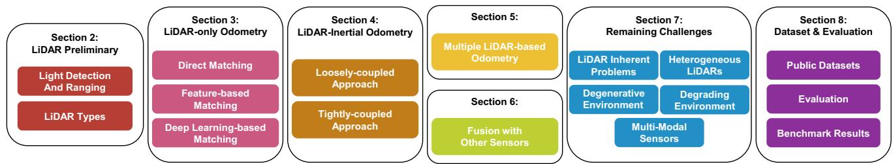
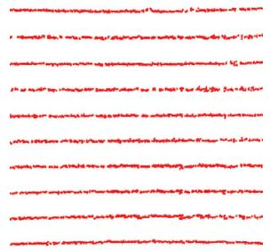
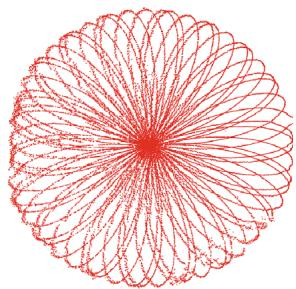
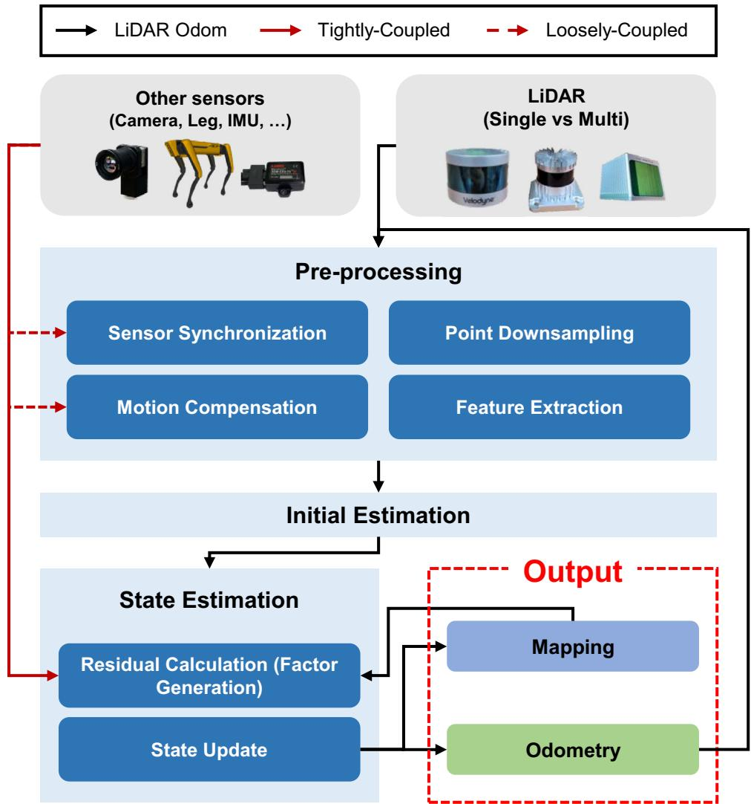
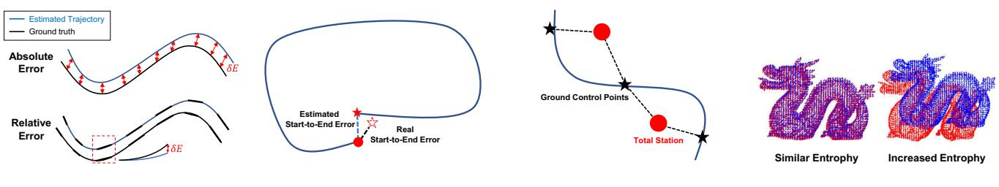
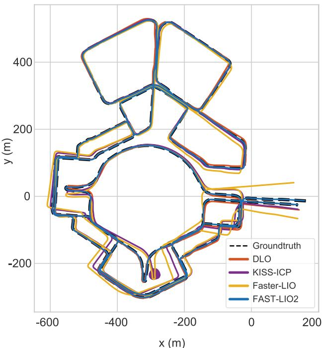
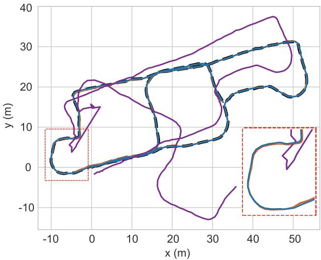

REVIEW ARTICLE

LiDAR odometry survey: recent advancements and remaining challenges
Dongjae Lee1 Minwoo Jung1 Wooseong Yang1 Ayoung Kim1
Received: 6 November 2023 / Accepted: 3 January 2024 / Published online: 9 February 2024
© The Author(s) 2024
Abstract
Odometry is crucial for robot navigation, particularly in situations where global positioning methods like global positioning system are unavailable. The main goal of odometry is to predict the robot’s motion and accurately determine its current location. Various sensors, such as wheel encoder, inertial measurement unit (IMU), camera, radar, and Light Detection and Ranging (LiDAR), are used for odometry in robotics. LiDAR, in particular, has gained attention for its ability to provide rich three-dimensional (3D) data and immunity to light variations. This survey aims to examine advancements in LiDAR odometry thoroughly. We start by exploring LiDAR technology and then scrutinize LiDAR odometry works, categorizing them based on their sensor integration approaches. These approaches include methods relying solely on LiDAR, those combining LiDAR with IMU, strategies involving multiple LiDARs, and methods fusing LiDAR with other sensor modalities. In conclusion, we address existing challenges and outline potential future directions in LiDAR odometry. Additionally, we analyze public datasets and evaluation methods for LiDAR odometry. To our knowledge, this survey is the first comprehensive exploration of LiDAR odometry.
Keywords LiDAR · Odometry · Sensor fusion · Remaining challenges · Dataset
1 Introduction
The history of odometry in robotics has seen a significant evolution, marked by key milestones and influential literature [63, 96, 159]. In the early stages, odometry heavily relied on wheel encoders and dead reckoning methods [28]. However, the accuracy of wheel odometry was constrained by sensor errors stemming from wheel slippage and algorithmic inaccuracies. During this phase, researchers explored alternative approaches, shifting their focus to other sensors, such as range sensors and visual sensors. There was a concurrent surge in the field of computer vision, witnessing rapid developments in visual odometry studies [38, 111, 121]. Simultaneously, studies emerged concentrating on obtaining odometry through the use of range sensors [92, 93], along with the advancement of scan registration algorithms such as Iterative Closest Point (ICP) [9]. These two major research streams—range sensor-based odometry and visual odometry—represent a critical juncture in the historical evolution of robotic odometry.
Further into this period, range sensors advanced and 3D LiDAR emerged as a transformative technology capable of measuring the surrounding space in 3D, surpassing traditional 2D measurements. Despite substantial progress, visual odometry faces limitations, particularly in low-light conditions, restricting its applicability, such as during nighttime operations. Recognizing the importance of precise location data for autonomous robots in decision-making [58, 60, 97, 118, 119, 147], researchers turned their attention to LiDAR, which scans the surroundings in 3D while remaining unaffected by lighting conditions. This led to a rapid evolution in range sensor-based odometry using LiDAR [125, 126, 162].

Fig. 1 Structure of LiDAR odometry survey. Section 2 explores the intricacies of LiDAR technology. Sections 3, 4, 5 and 6 investigate the LiDAR odometry under different sensor modalities. Section 7 intro-
duces the ongoing challenges in LiDAR odometry. Finally, Sect. 8 presents the public datasets, evaluation metrics, and benchmark results
This evolution prompts a focused review of odometry works leveraging LiDAR.
In previous research, Mohamed et al. [96] extensively reviewed approaches of odometry, placing a particular emphasis on visual-based methods. Conversely, Jeon et al. [59] presented a survey specifically tailored for unmanned aerial vehicles (UAV), focusing on the performance of visual odometry algorithms when implemented on NVIDIA Jetson platforms. Their assessment considered factors such as odometry accuracy and resource utilization (CPU and memory usage) across different Jetson boards and trajectory scenarios. Wang and Menenti [143] summarized the major applications of odometry, pointing out an expected shift toward addressing challenges in the field. Meanwhile, Li and Ibanez-Guzman [82] provided a detailed review of automotive LiDAR technologies and associated perception algorithms, exploring various components, advantages, challenges, and emerging trends in LiDAR perception systems for autonomous vehicles. Focusing on LiDAR-only odometry, Jonnavithula et al. [63] categorized existing works into point correspondence, distribution correspondence, and network correspondence-based methodologies. They also conducted performance evaluations for LiDAR-only odometry literature. Similarly, Zou et al. [180] performed a comprehensive analysis and comparison of LiDAR simultaneous localization and mapping (SLAM) for indoor navigation, detailing strengths and weaknesses across real-world environments.
Notably, our review addresses a gap observed in existing surveys. While previous works have delved into specific aspects of LiDAR odometry, none have completely covered all methodologies. Therefore, our review aims to provide a thorough examination, encompassing not only LiDARonly odometry but also approaches that successfully integrate other sensors for accurate LiDAR odometry.
The structure of this survey, illustrated in Fig. 1, unfolds as follows: Sect. 2 initiates an exploration of LiDAR sensors. Subsequently, we categorize LiDAR odometry based on sensor modality and delve into each category within respective sections. Section 3 is dedicated to methods that solely rely on LiDAR, while Sect. 4 outlines LiDAR odometry works that integrate IMU sensor with LiDAR. Section 5 provides insights into odometry employing multiple LiDARs. In Sect. 6, we examine the fusion of LiDAR sensor with other sensors, such as a camera. Following this, we delve into the unresolved challenges within LiDAR odometry. Finally, our survey concludes by discussing available public datasets and evaluation metrics, supplemented by the presentation of benchmark results. The key contributions of this paper are as follows:
Our paper offers a comprehensive review of LiDAR odometry following the progression of the technology. We categorize the review into the following sections: LiDAR preliminary, LiDAR-only odometry, LiDARinertial odometry, multiple LiDARs, and fusion with other sensors.
Our paper explores unresolved challenges in LiDAR odometry, offering insights and directions for future research. By addressing these challenges, we aim to catalyze advancements that enhance the accuracy and robustness of LiDAR odometry.
• Our paper scrutinizes existing public datasets, highlighting their distinctive characteristics. Furthermore, we provide an overview of the evaluation metrics utilized in relevant studies and present benchmark results.
2 LiDAR preliminary
To understand the progress and challenges in LiDAR odometry, it is essential first to grasp the basics of LiDAR sensors. This section investigates the fundamental principles and different categories of LiDAR sensors.
2.1 Light detection and ranging
LiDAR, an acronym for Light Detection And Ranging, is a powerful remote sensing technology employed for measuring distances and constructing highly detailed 3D representations of objects and environments [67, 117, 146]. The sensing process commences with a LiDAR system emitting laser pulses toward a designated area. When these pulses encounter obstacles, a portion of the light reflects back to the LiDAR sensor. Measuring the time each laser pulse takes to return and leveraging the constant speed of light, LiDAR calculates the distance to the target.
Applied systematically across large areas and synthesized into distance measurements, LiDAR produces a point cloud—a collection of numerous points in 3D space. These points effectively map the 3D shape and features of the area or object. In essence, LiDAR facilitates the creation of highly detailed and accurate 3D representations of the surrounding world, proving invaluable in various fields such as geospatial mapping [18, 37], autonomous navigation [63, 180], and environmental monitoring [145, 169].
2.2 LiDAR categorization
LiDAR can be categorized based on their distinct imaging architectures and measurement principles, as extensively discussed in previous survey [117]. Imaging mechanisms of LiDAR can be classified into three main categories: mechanical LiDARs, scanning solid-state LiDARs, and flash LiDARs with non-scanning architectures. Regarding measurement principles, the primary types comprise pulsed Time of Flight (ToF), Amplitude Modulated Continuous Wave (AMCW), and Frequency Modulated Continuous Wave (FMCW) LiDARs. Additionally, LiDARs can be further subclassified based on attributes such as detection range, field of view (FOV), and wavelength, as discussed in other literature [8, 73]. However, in this paper, we concentrate on mechanical LiDARs, scanning solid-state LiDARs, ToF LiDARs, and FMCW LiDARs, as these variants of LiDAR hold significant relevance in the context of LiDAR odometry.
2.2.1 Imaging mechanisms
Mechanical LiDARs, one of the most established configurations, operate using a rotating assembly to direct a laser beam across different angles. While mechanical LiDAR has proven reliable in measurement quality, it is subject to limitations associated with its mechanical components. These include susceptibility to degradation over time, necessitating regular maintenance to ensure optimal functionality. The inherent moving parts can also result in slower data acquisition speeds and increased vulnerability to vibrations and external shocks.
In contrast, scanning solid-state LiDAR systems eliminate the need for mechanical rotation with diverse mechanisms. Some apply Mirror Microelectromechanical (MEMS) [52] technology, which utilizes a stationary laser directed at the small electromechanical mirrors, adjusting the tilt angle with input voltage difference as a substitute for rotational components. Another solution is adopting an optical phased array (OPA) [48] system. OPA establishes phase modulators to modulate the wave shapes similarly to a phased array radar.
Particularly, scanning solid-state LiDAR with Risley prisms [84] represents a notable innovation in LiDAR community. Risley prisms allow rapid and controlled beam steering without physical movement, resulting in a more compact and robust system suitable for demanding applications. Despite the disadvantages of limited FOV, this mitigates potential issues related to component degradation and extends the LiDAR system’s operational lifespan. Their intricate scanning patterns also ensure exhaustive environmental mapping, a critical aspect for achieving reliable LiDAR odometry. Figure 2 visually represents distinguishing scanning patterns of LiDARs.
2.2.2 Measurement principles
ToF LiDAR operates by emitting laser pulses and measuring the time it takes for these pulses to return after bouncing off a target. The distance to the target is calculated using the speed of light and the time the laser pulse takes. This straightforward method provides high-resolution distance measurements, making it a popular choice. However, one limitation of ToF LiDAR is its susceptibility to external light sources, which can reduce the signal-to-noise ratio (SNR) [72].
On the other hand, FMCW LiDAR executes by continuously projecting light with a varying frequency and analyzing the frequency shift of the reflected light. This frequency shift is directly proportional to the target’s distance, enabling precise distance measurements. FMCW LiDAR offers several notable advantages, including inherent resilience to interference due to its continuous wave signal, which helps mitigate issues caused by multi-path reflections. Moreover, FMCW LiDAR provides the relative velocity of the objects by analyzing the frequency shift, which proves particularly valuable in dynamic environments. However, it is important to note that FMCW LiDAR systems tend to be more intricate and potentially pricier compared to ToF LiDARs.
LiDAR technologies, each possessing unique strengths, play an integral role in LiDAR odometry. Tailored to diverse operational needs, they can provide a range of options for capturing accurate depth data across different applications.
3 LiDAR-only odometry
LiDAR-only odometry determines a robot’s position by analyzing consecutive LiDAR scans. This involves the application ofscan matching, a well-known technique in computer vision, pattern recognition, and robotics. LiDAR-only odometry can be classified into three types based on how scan matching is performed: (1) direct matching, (2) feature-based matching, and (3) deep learning-based matching. A summary of the LiDAR-only odometry literature is listed in Table 1.

(a) Repetitive

(b) Non-Repetitive
Fig. 2 Diverse LiDAR Scanning Patterns. The figure depicts repetitive and non-repetitive patterns among the LiDAR scanning patterns. In (a), Velodyne VLP-16, a mechanical LiDAR, shows a vertical channel-based repetitive pattern. In (b), Livox Mid-70, a scanning solid-state LiDAR with Risley prisms, displays a unique lotus-shaped, non-repetitive pattern
3.1 Direct matching
The direct matching method directly calculates the transformation between two consecutive LiDAR scans, representing the most straightforward approach in LiDAR-only odometry. The ICP algorithm [9] is a commonly used technique for estimating this transformation iteratively by minimizing an error metric, typically the sum of squared distances between the matched point pairs. Robot odometry is derived by calculating the transformation between each pair of consecutive scans using the ICP algorithm. However, the ICP algorithm has drawbacks, including susceptibility to local minima, which necessitates a reliable initial guess. The algorithm is also sensitive to noise, such as dynamic objects. Additionally, its iterative nature can result in computational expense, sometimes causing prohibitively slow computation speed. Consequently, substantial efforts have been dedicated to enhancing the performance of the ICP algorithm for improved odometry.
TrimmedICP (TrICP) [26] enhances the conventional ICP algorithm by employing the least trimmed squares method instead of the standard least squares method. This modification improves computation speed and robustness by minimizing the sum of squared residuals for a subset of points with the smallest squared residuals. Point-to-plane ICP, introduced by Chen and Medioni [25], refines the performance of the traditional point-to-point ICP by incorporating information about prevalent planes in real-world situations. Generalized-ICP [122] integrates point-to-point ICP and point-to-plane ICP within a probabilistic framework, leveraging the covariance of points during the minimization step. This approach maintains the speed and simplicity of the standard ICP while demonstrating superior robustness against noise and outliers. NICP [123] extends Generalized-ICP by evaluating distances in 6D space, including 3D point coordinates and corresponding surface normals in the measurement vector. LiTAMIN [156] and LiTAMIN2 [157] support faster registration through point reduction and modify the cost function of traditional ICP for robust registration.
Paired with the ICP algorithm, the Normal Distribution Transform (NDT) [10] algorithm provides an alternative that eliminates the challenging task of establishing point correspondences. The NDT algorithm aligns two point clouds by creating a normal distribution associated with the point cloud. It determines a transformation that aligns the point clouds based on the likelihood within the spatial probability function. Hong and Lee [53] enhance the conventional NDT algorithm by introducing a probabilistic NDT representation. They assign probabilities to point samples, addressing the degeneration effect by incorporating computed covariance. Their study demonstrates that probabilistic NDT outperforms traditional NDT in odometry estimation.
Despite advancements in scan-to-scan matching algorithms, their accuracy is inherently limited. Consequently, recent LiDAR odometry works predominantly estimate the robot’s pose by utilizing both scan-to-scan and scan-to-map matching. IMLS-SLAM [32] estimates odometry through Implicit Moving Least Square (IMLS) representation-based scan-to-map matching. DLO [20] creates a submap for scanto-map matching by combining point clouds from a selected subset ofkeyframes, including those forming the convex hull.
Conventional LiDAR odometry typically computes discrete odometry each time a new LiDAR point cloud is received. In contrast, certain methods aim to model a continuous trajectory, emulating the continuous motion of an actual robot. CT-ICP [31] accomplishes this by interpolating the positions of individual points within the LiDAR scan between the starting and ending poses. Subsequently, a continuoustime odometry estimate is obtained by registering each point through scan-to-map matching.
3.2 Feature-based matching
Feature-based approaches in LiDAR-only odometry extract feature points in the LiDAR point cloud and leverage them to estimate the transformation. Utilizing only feature points instead of the entire point cloud can improve computational speed and overall performance by eliminating outliers such as noise. The main challenge with feature-based methods lies in the selection of ‘good’ feature points that enhance point cloud registration performance.
LOAM [162, 163] identifies points on sharp edges and planar surface patches by assessing local surface smoothness and matching them to estimate the robot’s motion. Subsequent developments within the LOAM framework aim to improve performance by refining feature point selection. LeGO-LOAM [125] utilizes point cloud segmentation to classify points as either ground points or segmented points, ensuring accurate feature extraction. It leverages planar features from ground points and edge features from segmented points to incrementally determine a 6 degree-of-freedom (DOF) transformation. R-LOAM [101] and RO-LOAM [102] optimize the robot’s trajectory by incorporating mesh features derived from the 3D triangular mesh of a reference object with a known global coordinate location.
Table 1 The overarching summary of LiDAR-only odometry
| Method | Year | Contributions | |
| Direct | ICP [9] | 1992 | Iteratively calculate closest point with point-to-point distance |
| Chen and Medioni [25] | 1992 | Point-to-plane ICP | |
| TrICP [26] | 2002 | Improves ICP with trimmed squared method | |
| NDT [10] | 2003 | Leverages normal distribution for registration | |
| Generalized-ICP [122] | 2009 | Integrates point-to-point ICP and point-to-plane ICP | |
| NICP [123] | 2015 | Extends Generalized-ICP by incorporating surface normals | |
| Hong and Lee [53] | 2017 | Introduce probabilistic NDT representation | |
| IMLS-SLAM [32] | 2018 | IMLS representation for scan-to-map matching | |
| LiTAMIN [156], LiTAMIN2 [157] | 2021 | Faster registration and modified cost function using KL divergence | |
| DLO [20] | 2022 | Scan-to-map matching with selected keyframes using convex hull | |
| CT-ICP [31] | 2022 | Interpolates the positions for continuous trajectory | |
| KISS-ICP [137] | 2023 | Point-to-point ICP with adaptive thresholding | |
| Feature | LOAM [162, 163] | 2014 | Extract edge and planar feature points for registration |
| LeGO-LOAM [125] | 2018 | Leverages ground segmentation within LOAM framework | |
| SuMa [7] | 2018 | Utilizes surface normals from surfel-based map | |
| SuMa++ [24] | 2019 | Performs semantic ICP with semantic labels from RangeNet++ [95] | |
| F-LOAM [139] | 2021 | Emphasizes horizontal features to minimize false detections | |
| Zhou et al. [176], π-LSAM [177] | 2021 | Introduces plane adjustment in indoor situations | |
| MULLS [104] | 2021 | Scan-to-map multi-metric linear least square ICP | |
| NDT-LOAM [22] | 2021 | Combines weighted NDT and feature-based pose refinement | |
| E-LOAM [45] | 2022 | Performs D2D-NDT with geometric and intensity features | |
| R-LOAM [101], RO-LOAM [102] | 2022 | Extracts 3D triangular mesh features from reference object | |
| Wang et al. [141] | 2022 | Coarse-to-fine odometry with NDT and PLICP | |
| VoxelMap [160] | 2022 | Leverages probabilistic plane representation and adaptive voxel construction | |
| Deep | LO-Net [80] | 2019 | Scan-to-scan LiDAR odometry network |
| LodoNet [173] | 2020 | Select MKPs for odometry estimation | |
| Cho et al. [27] | 2020 | Unsupervised learning with VertexNet and PoseNet |
Direct, Feature, and Deep represent Direct, Feature-based, and Deep Learning-based matching each
Plane features, prevalent in everyday environments, have garnered significant attention as they can be easily extracted from the LiDAR point cloud. SuMa [7] employs surface normals for odometry by comparing vertex and normal maps from the current scan with those rendered from a surfelbased map. SuMa++ [24] integrates semantic information from RangeNet++ [95] into the surfel-based map [7] and applies Semantic ICP, adding semantic constraints to the objective function of the ICP algorithm. F-LOAM [139] emphasizes extracting distinctive horizontal features from the point cloud of mechanical LiDAR, where data are sparse vertically and denser horizontally. This approach minimizes the risk offalse feature detection in the horizontal plane. Zhou et al. [176] and π-LSAM [177] jointly optimize keyframe poses and plane parameters, referred to as plane adjustment (PA), in indoor environments. MULLS [104] extracts diverse feature points (ground, facade, pillar, beam) and employs scan-to-map multi-metric linear least square ICP (MULLS-ICP). VoxelMap [160] employs adaptive-size, coarse-to-fine voxel construction for robust handling of varying environmental structures and sparse, irregular LiDAR point clouds. It addresses uncertainties from both LiDAR measurement noise and pose estimation error through probabilistic plane representation.
Instead of the variants of the ICP algorithm, the NDT algorithm can be employed, even when using features. NDT-LOAM [22] initially obtains approximate odometry using the weighted NDT (wNDT) algorithm. This initial estimate is then refined by incorporating corner and surface features. E-LOAM [45] extracts geometric and intensity features, enhances these features with local structural information, and estimates odometry with D2D-NDT matching. Wang et al. [141] propose a coarse-to-fine registration metric with NDT and PLICP (point-to-line ICP) [17]. The roughly estimated pose with NDT serves as the initial guess for PLICP, resulting in a more accurate pose estimation.
3.3 Deep learning-based matching
While direct and feature-based methods exhibit effective performance in various environments, they often encounter difficulties with correspondence matching. It is crucial to maintain feature consistency and find the relationship between each scan to address this challenge. Some researchers investigate deep learning approaches, which hold promise in effectively addressing these issues. LO-Net [80] introduces a scan-to-scan LiDAR odometry network that predicts normals, identifies dynamic regions, and incorporates a spatiotemporal geometrical consistency constraint for improved interactions between sequential scans. LodoNet [173] utilizes a process of back-projecting matched keypoint pairs (MKPs) from LiDAR range images into a 3D point cloud. This involves employing an MKPs selection module inspired by PointNet [108], which aids in identifying optimal matches for estimating rotation and translation. Cho et al. [27] exploit unsupervised learning in LiDAR odometry, utilizing VertexNet to quantify point uncertainty and PoseNet to predict relative pose between frames. The network incorporates geometrical information through estimating normal vectors and uses an uncertainty-weighted ICP loss. During supervised training, they address trivial solutions via FOV loss.
4 LiDAR-inertial odometry
LiDAR-only odometry is computationally efficient without needing additional sensors. However, it cannot fully address the challenges detailed in Sect. 7. Therefore, recent LiDAR odometry commonly integrates LiDAR with IMU. IMU provides angular velocity and linear acceleration measurements, making it suitable for estimating coarse robot motion and enhancing pose estimation accuracy when used with LiDAR. LiDAR-inertial odometry can be branched into two categories based on how LiDAR and IMU data are fused: (1) loosely coupled and (2) tightly coupled.
The loosely coupled method independently estimates the state of each sensor, combines these states with weights, and then determines the robot’s state. This approach offers high flexibility, as it estimates the state of each sensor individually. It facilitates easy adaptation to changes in the sensor system without extensive modifications to the existing framework as long as a suitable odometry module is created for the new sensor modality. Furthermore, it permits assigning weights to specific sensors, ensuring robustness in case one sensor performs sub-optimally, as the odometry can still utilize data from other sensors.
On the other hand, the tightly coupled method utilizes measurements from all sensors concurrently to estimate the robot’s state. This results in potentially more accurate odometry, as it incorporates a greater number of constraints during the odometry estimation process compared to the loosely coupled method. However, this approach comes with a higher computational load, as all observations must be processed together. Additionally, it may be more susceptible to a loss of robustness if one sensor delivers poor-quality observations. A summary of LiDAR-inertial odometry literature is provided in Table 2. In the following subsections, the specifics of these approaches are introduced.
4.1 Loosely coupled approaches
From the existing LiDAR-only methods, advancements were made with the development of LOAM [162, 163] and LeGO-LOAM [125] by incorporating IMU sensor to correct distortions in LiDAR scans and provide initial motion estimates. Building on these improvements, Zhou et al. [175] estimate the coarse pose of the robot using INS and encoder data, refining it with LiDAR odometry via the NDT algorithm. Tang et al. [134] use the extended Kalman filter (EKF) to fuse independent position results from LiDAR and IMU sensors. Similarly, Zhen et al. [172] employ the error-state Kalman filter (ESKF), merging the prior motion model from IMU with LiDAR-derived partial posterior information for improved robustness and accuracy. Additionally, Hening et al. [50] utilize an adaptive EKF in their estimations, incorporating residuals from both INS with GPS and INS with LiDAR, facilitating further result refinement. On another front, Yang et al. [154] opt for pose graph optimization, combining INS and LiDAR scan matching-based estimates for accurate and reliable state estimation. While loosely coupled approaches improve accuracy over LiDAR-only methods and offer modular flexibility, they do not fully harness the synergy between sensors. This has led to increased research into tightly coupled methods, which seek to maximize sensor integration for enhanced performance.
4.2 Tightly coupled approaches
Shifting the focus to tightly coupled methods, this approach offers a distinct perspective on sensor fusion. Contrasting with the loosely coupled techniques, tightly coupled methods process data from multiple sensors in a unified framework. This integrated processing exploits the interdependencies among different sensor modalities, aiming to enhance both the accuracy and robustness of the state estimation process.
Table 2 The overarching summary of LiDAR-inertial odometry
| Method | Year | Feature | Continuous | Contributions | |
| L | LOAM [162, 163] | 2014 | Yes | No | Utilizes IMU for initial motion estimation and undistortion |
| Tang et al. [134] | 2015 | Yes | No | Combines each odometry estimation from LiDAR and IMU | |
| Zhou et al. [175] | 2017 | Yes | No | Coarse pose estimation with INS/encoder and correction through NDT | |
| Zhen et al. [172] | 2017 | Yes | No | Merges prior motion model from IMU with LiDAR data | |
| Hening et al. [50] | 2017 | Yes | No | Utilizes adaptive EKF with INS and LiDAR | |
| Lego-LOAM [125] | 2018 | Yes | No | Utilize IMU for initial motion estimation and undistortion | |
| Yang et al. [154] | 2018 | Yes | No | Applies graph optimization with INS and LiDAR | |
| T | Zebedee [12] | 2012 | Yes | No | Optimizes surface correspondence error and IMU measurement deviations |
| LIPS [43] | 2018 | Yes | Yes | Utilizes IMU preintegration factor and LiDAR plane factor | |
| IN2LAMA [76] | 2019 | Yes | No | Formulates batch optimization with LiDAR and IMU bias factor | |
| Ye et al. [155] | 2019 | Yes | No | Joint-optimization of LiDAR and preintegrated IMU with rotational constraint | |
| LIO-SAM [126] | 2020 | Yes | No | Pose graph optimization with LiDAR and IMU preintegration factor | |
| IN2LAAMA [77] | 2020 | Yes | No | Adds UPM-based LiDAR de-skewing to IN2LAMA | |
| LINS [110] | 2020 | Yes | No | iESKF for faster odometry estimation | |
| Ding et al. [33] | 2020 | No | No | Utilizes Bayesian network considering high dynamic scenarios | |
| KFS-LIO [81] | 2021 | Yes | No | Graph optimization scheme with effective feature selection | |
| Li et al. [79] | 2021 | Yes | No | Hierarchical pose optimization with solid-state LiDAR | |
| CLINS [94] | 2021 | Yes | Yes | Employs continuous-time framework through cubic B-spline | |
| LoLa-SLAM [66] | 2021 | No | No | Achieves high-frequency odometry with LiDAR scan slicing | |
| Fast-LIO [151] | 2021 | Yes | No | Introduces novel Kalman gain for Kalman filter | |
| LION [133] | 2021 | Yes | No | Incorporates observability metric for odometry evaluation | |
| LIO-Vehicle [150] | 2021 | Yes | No | Proposes motion constraints for ground vehicles | |
| Chen et al. [23] | 2021 | Yes | No | Plane-driven submap matching with learning-based loop closure | |
| Liu [88] | 2022 | Yes | No | Exploits particle swarm filter with learning-based loop closure | |
| Liu and Ou [89] | 2022 | Yes | No | Proposes FG-LC-Net for learning-based loop closure | |
| Zeng et al. [161] | 2022 | Yes | No | Extracts feature based on single line depth variation | |
| Koide et al. [71] | 2022 | Yes | No | Leverages Generalized-ICP-based cost and IMU preintegration factor | |
| PGO-LIOM [128] | 2022 | Yes | Yes | Gradient-free optimization with Monte-Carlo sampling | |
| Wildcat [113] | 2022 | Yes | Yes | Sliding window-based continuous-time odometry framework | |
| Fast-LIO2 [152] | 2022 | No | No | Improves Fast-LIO with direct fashion and ikd-Tree | |
| Faster-LIO [4] | 2022 | No | No | Integrates iVox with FAST-LIO2 | |
| RF-LIO [109] | 2022 | No | No | Removes dynamic points with scan matching and IMU preintegration | |
| Hu et al. [57] | 2022 | No | No | Leverages segmentation-based moving object detection | |
| Li et al. [78] | 2022 | Yes | No | Introduces intensity edge feature within geometric planar feature | |
| Point-LIO [47] | 2023 | No | No | Employs point-wise odometry estimation framework | |
| Setterfield et al. [124] | 2023 | Yes | No | Directly includes LiDAR feature correspondence factor | |
| RI-LIO [167] | 2023 | No | No | Introduces photometric residuals from reflectivity image | |
| Shi et al. [129] | 2023 | No | No | Utilizes invariant EKF with invariant observer | |
| FR-LIO [171] | 2023 | No | No | Adaptively divides LiDAR scan into multiple sub-frames | |
| DLIO [21] | 2023 | No | Yes | Leverages hierarchical geometrical observer for state estimation | |
| Chen et al. [19] | 2023 | Yes | No | SE2 constrained pose estimation | |
| LIMOT [178] | 2023 | Yes | No | Multi-object tracking for factor graph-based dynamic objects filtering | |
| Kim et al. [68] | 2023 | Yes | No | Proposes adaptive keyframing scheme for extreme environments |
L, and T represent loosely coupled and tightly coupled each
This approach begins with Zebedee [12], a pioneering effort in 3D LiDAR-inertial odometry. Zebedee optimizes surface correspondence error and IMU measurement deviations for odometry estimation. Initially, integrating IMU measurements directly into the factor graph posed computational challenges due to the high-frequency output of6D pose parameters. The advent of the IMU preintegration method [40] addressed this issue by condensing hundreds of IMU measurements between keyframes into a single IMU preintegration factor. This facilitates the inclusion of each sensor measurement in the factor graph, accelerating the development of graph-based LiDAR odometry methods.
Building upon these advancements, further innovations emerged in the field. LIPS [43] constructs a factor graph with continuous IMU preintegration factors and 3D plane factors from LiDAR measurements, solving the graph-based optimization problem to obtain robot odometry. IN2LAMA [76] utilizes upsampled preintegrated measurements (UPMs) [75] from IMU for de-skewing LiDAR scans, formulating a batch on-manifold optimization with LiDAR factor, IMU bias factor, and inter-sensor time-shift factor. Its next version, IN2LAAMA [77], introduces the IMU preintegration factor, similar to their previous work, IN2LAMA, but stands out by using UPMs to precisely de-skew all LiDAR measurements. While this advanced de-skewing process enhances accuracy, it may impact the real-time operation. In LIO-SAM [126], motion estimated through IMU preintegration serves a dual purpose: de-skewing LiDAR scans and introducing a factor into the factor graph. In addition, Ye et al. [155] leverage LiDAR scans and preintegrated IMU measurements for joint optimization with rotational-constrained refinement.
Further advancements in tightly coupled methods have been made, focusing on feature selection and global optimization. KFS-LIO [81] introduces a metric for selecting the most effective subset of LiDAR features, streamlining existing graph-based methods. Li et al. [79] exploit hierarchical pose graph optimization with a novel feature extraction method of scanning solid-state LiDAR, which has an irregular scanning pattern and a metric weighting function for quantifying each LiDAR feature’s residual. Koide et al. [71] leverage GPU-accelerated voxelized Generalized-ICP matching cost factor and IMU preintegration factor. They employ a keyframe-based fixed-lag smoothing technique to estimate low-drift trajectories efficiently and create a factor graph that minimizes global registration errors throughout the map. Additionally, Setterfield et al. [124] directly include feature correspondences from LiDAR measurement into a factor graph.
Unlike prior discrete-time methods, CLINS [94] employs a continuous-time framework utilizing cubic B-splines, allowing trajectory estimation at any given time by optimizing control points and knots. CLINS excels in handling asynchronous data from LiDAR and IMU sensors and managing high dynamic scenarios with small knot distances. This makes it adept at handling point clouds with potential distortions due to different acquisition times. PGO-LIOM [128] introduces a gradient-free optimization algorithm and a fully parallel Monte Carlo sampling approach specifically designed to address challenges posed by nonlinear and noncontinuous problems that are difficult to handle with lowpower onboard computers. They also integrate acceptancerejection sampling [39] into feature matching cost, allowing the system to account for correct and incorrect feature matching concurrently. Wildcat [113] integrates asynchronous LiDAR and IMU measurements using continuous-time trajectory representations in a sliding-window fashion. DLIO [21] leverages the hierarchical geometrical observer instead of a filter for performance-guaranteed state estimation. Also, they propose a new coarse-to-fine approach for the continuous trajectory with a constant jerk and angular acceleration model to reduce computational overhead significantly.
As graph-based approaches progress, various factors are integrated into factor graphs to improve odometry performance. However, the increasing computational demands of such methods have led to a growing interest in approaches with lighter computational loads. Consequently, several filter-based approaches, often based on the classical Kalman filter, have emerged. LINS [110] utilizes an iterated errorstate Kalman filter (iESKF) for faster odometry estimation compared to graph-based approaches. Despite attempts to enhance computational efficiency, the LINS system still faces challenges with a considerable computational load and slow processing speed, particularly when calculating the Kalman gain due to the substantial number of LiDAR measurements. FAST-LIO [151] successfully addresses this issue by introducing a novel Kalman gain formula. FAST-LIO2 [152] further improves accuracy by eliminating the feature extraction process and directly registering raw LiDAR measurements to the map. They also enhance computation speed with a data structure called an ikd-Tree. Faster-LIO [4] replaces ikd-Tree with incremental voxels (iVox) for faster search. Shi et al. [129] utilize the Invariant EKF to mitigate the linearization errors inherent in EKF-based odometry, which can significantly impact estimation performance. The invariant EKF [6] demonstrates enhanced convergence and consistency compared to the standard EKF, resulting in more reliable results. Additionally, they introduce two novel methodologies: Inv-LIO1 and Inv-LIO2. Inv-LIO1 initially estimates the state through scan-to-scan matching and refines it using a mapping module. In contrast, Inv-LIO2 achieves superior accuracy with increased computation time by performing map-refined odometry through scan-to-map matching and integrating global map updates.
Advancements in graph-based and filter-based approaches have substantially enhanced the reliability of LiDAR-inertial odometry in typical environments. Moreover, methods are now specifically designed to robustly estimate odometry in complex scenarios such as dynamic and degenerative environments. Ding et al. [33] exploit factor graph optimization based on a Bayesian network, considering high dynamic scenarios such as urban areas. RF-LIO [109] begins with an initial pose estimation using IMU preintegration. It utilizes the error between IMU preintegration and scan matching to create a range image and eliminate dynamic points. In addition, RF-LIO employs graph optimization to enhance pose estimation further. Similar with RF-LIO, Hu et al. [57] leverage segmentation-based moving object detection and verification into FAST-LIO2 [152] to handle inaccurate data association in dynamic environments. LIMOT [178] estimates poses of ego vehicle and dynamic target objects with trajectory-based multi-object tracking. By separating the dynamic and static object pose factors, the entire factor graph can simultaneously filter the dynamic objects with pose estimation. Kim et al. [68] propose an adaptive keyframe generation scheme that considers the surrounding environment, enabling higher odometry accuracy in extreme environments.
Furthermore, a variety of constraints and metrics have been developed to refine odometry accuracy further. LION [133] incorporates an observability metric to anticipate potential declines in the quality of estimated odometry. This observability score guides the system’s transition to an alternative odometry algorithm facilitated by a supervisory algorithm like HeRo [120]. LIO-Vehicle [150] takes motion constraints of the ground vehicle to handle geometrically degraded environment by extending 2-DOF vehicle dynamics to preintegrated factor. Zeng et al. [161] propose a feature extraction scheme based on single line depth variation and is specifically designed for the non-uniform sampling point cloud characteristics of scanning solid-state LiDAR. Chen et al. [19] leverage SE(2) constrained pose estimation for ground vehicle to solve non-SE(2) vehicle motion perturbation. Li et al. [78] improve feature extraction by incorporating intensity edge features within geometric planar features. They also employ multi-weighting functions based on residuals and registration consistency to assess the quality of each feature during the pose optimization process. Furthermore, RI-LIO [167] combines two residual types in its state estimation process: photometric errors from reflectivity images and point-to-plane distances from geometric points. These images are generated using the Corrected Projection by Real Angle (CPBRA) method, addressing LiDAR laser projection biases.
Another method to enhance accuracy involves highfrequency odometry, where advancements are made through the development of techniques that improve emotion estimation by segmenting LiDAR scans. LoLa-SLAM [66] achieves low-latency localization with a high temporal update rate by slicing LiDAR scans, ensuring sufficient measurements for accurate matching. This method is crucial for high-frequency odometry as it allows for more frequent and timely updates of the vehicle’s position. On the other hand, FR-LIO [171] deals with an aggressive motion by adaptively dividing LiDAR scan into multiple sub-frames, enhancing estimation robustness. Such division is essential for maintaining accuracy in high-frequency odometry, particularly in dynamic environments. Additionally, Zhao et al. introduce the iterated ESKFS to mitigate potential degeneration issues caused by increased sub-frames. Point-LIO [47] achieves high-frequency odometry through a point-by-point framework. This approach involves processing LiDAR scans at the individual point level, a strategy that naturally eliminates motion distortion. These high-frequency methods offer a path to more responsive and accurate odometry in rapidly changing scenarios.
Similar to LiDAR-only odometry, deep learning methods play a pivotal role in enhancing odometry estimation, showcasing advancements in this domain. Chen et al. [23] integrate factor graph for state estimation and plane-driven submap matching with a learning-based point cloud network for loop detection. Liu [88] exploits the adaptive particle swarm filter with an efficient resampling strategy to tackle the environment diversity integrating with lightweight learning-based loop detection. Liu and Ou [89] propose FG-LC-Net [90] for learning-based loop closure and data structure S-Voxel to improve the speed of the system.
5 Multiple LiDARs
The LiDAR-inertial odometry, discussed in Sect. 4, showcases impressive accuracy. Nevertheless, limited FOV in certain LiDAR systems poses challenges to state estimation, hindering further advancements. Additionally, interference from other sensors can obscure regions within the LiDAR’s FOV. Irregular scanning patterns, observed in some scanning solid-state LiDARs, further pose challenges in achieving precise scan registrations due to sparsity.
To tackle challenges associated with single LiDAR systems, researchers are increasingly exploring the use of multiple LiDARs in odometry. Multiple LiDARs offer broader scanning coverage, reducing interference from additional sensors. Integrating diverse scanning patterns from multiple LiDARs enhances accuracy in scan registrations, surpassing reliance on a single LiDAR with a non-repetitive scanning pattern.
Pioneering research in the domain of multiple LiDARsbased odometry begins with M-LOAM [62]. Assuming the synchronization of all LiDARs, M-LOAM involves feature extraction from each LiDAR, data aggregation, and estimation of the robot’s state. However, synchronizing multiple
LiDARs using PPS (Pulse Per Second) introduces complexity and necessitates additional hardware requirements. On the other hand, synchronization through PTP (Precision Time Protocol) primarily aims to unify time standards but may demand extra effort to attain synchronized data. Lin et al. [86] employ a decentralized extended Kalman filter (EKF) that concurrently runs multiple EKF instances, one for each LiDAR. While this method can handle asynchronous LiDARs, it doesn’t fully leverage the combined measurements from all LiDARs simultaneously, which reduces the benefits of using multiple LiDARs.
In the case of independently utilizing measurements from each LiDAR for state estimation, the occlusion experienced by a single LiDAR can have a cascading impact on subsequent state estimation. LOCUS [103], which assumes that all the LiDARs are synchronized, points out that significant time discrepancies can result in failures in state estimation. In their subsequent research [115], they address this challenge by discarding delayed scans to enhance robustness, although this approach comes at the expense of losing some information. Similarly, M-LIO [30] acknowledges the asynchrony among LiDARs through signal association. However, it lacks a method to compensate for the temporal discrepancies arising from the asynchrony.
To overcome these issues, researchers have integrated IMU sensors for correcting temporal discrepancies in asynchronous LiDAR measurements [64, 98, 100, 142], similar to their role in LiDAR-inertial odometry. Nguyen et al. [98] and Wang et al. [142] employ IMU propagation to compensate for temporal discrepancies among multiple LiDARs. They extract edge and planar features from each point cloud and transform these features into a common reference frame aligned with the most recent acquisition time from all LiDARs. While these approaches successfully estimate robot trajectories, they also introduce additional challenges. IMU propagation, which is inherently discrete due to its frequency, requires additional linear interpolation, potentially leading to additional errors. Moreover, as time discrepancies become more pronounced, the duration required to accumulate the point clouds increases, which further intensifies the dependence on IMU for state propagation. However, the accuracy of the IMU propagation deteriorates over extended periods due to noise, which can adversely impact the odometry.
In addressing the challenge of discrete IMU propagation, MA-LIO [64] adopts B-spline interpolation [131] as an alternative for linear interpolation, effectively compensating for temporal discrepancies. Furthermore, Jung et al. [64] leverage point-wise uncertainty to assign penalties based on the acquisition time, addressing the challenge of degraded IMU propagation accuracy. On the other hand, SLICT [100] interprets the point clouds of each LiDAR as a continuous stream. Combining only the point clouds captured within a designated interval, SLICT maintains a consistent accumulation duration, even when significant time discrepancies exist.
Utilizing multiple LiDARs for odometry addresses the limitations associated with single LiDAR configuration, leading to improved performance. However, challenges such as optimizing LiDAR placements [56], increased computational demands, and inherent issues in single LiDAR system persist. Section 7.5 provides an examination of these challenges. Additionally, to enhance robustness, especially in challenging scenarios, researchers have explored the integration of LiDAR with other sensor modalities. The integration and its impact on system performance are discussed in more detail in Sect. 6.
6 Fusion with other sensors
LiDAR demonstrates robustness to changes in lighting conditions, unlike visual sensors; nevertheless, it confronts challenges in demanding environments. Specifically, LiDAR odometry encounters difficulties in obtaining accurate measurements under adverse conditions such as rain, snow, and dust. Moreover, LiDAR measurements are vulnerable in areas with limited geometric features or repetitive topographical attributes, such as long tunnels or highways. This susceptibility contributes to scan matching challenges, negatively affecting state estimation’s precision. Addressing these constraints involves exploring the integration of multiplesensor modalities, marking a notable frontier in current research.
RGB cameras offer distinct advantages over LiDAR sensors, excelling in capturing intricate details through color and texture. This capability becomes crucial in environments where prominent geometric features are scarce. In such scenarios, combining camera images with LiDAR measurements can significantly enhance the reliability of state estimation. Lin et al. [87] propose R2live, a tightly coupled LiDAR-visual-inertial odometry system that merges a highrate filter-based approach with a low-rate graph optimization. The high-rate filter leverages LiDAR, camera, and IMU measurements, while the factor graph optimizes local maps and visual landmarks. LVI-SAM [127] consists of two jointly operating subsystems: the LiDAR-inertial system (LIS) and visual-inertial system (VIS). The estimated pose from each subsystem serves as the initial pose for the other. LIS operates independently only when the number of features in VIS decreases due to aggressive motion or illumination changes, leading to a failure of LIS [164]. Similar to R2live, R3live [85] also separates the LiDAR-inertial odometry (LIO) and visual-inertial odometry (VIO). LIO reconstructs geometric structures, while VIO reconstructs texture information. The proposed VIO system utilizes RGB-colored point cloud maps to estimate the state, minimizing photometric errors without the need to detect visual features, thus saving processing time. Fast-LIVO [174] enhances efficiency by directly registering point clouds without extracting features. This optimization is achieved by reusing the point clouds from both the LIO and VIO subsystems, resulting in faster operation and improved overall system efficiency. Additionally, LIC-fusion [181, 182] fuses sparse LiDAR features with visual features through a multi-state constraint Kalman filter (MSCKF) along with online multi-sensor calibration. In the context of continuous-time SLAM, there has been a growing interest in continuous-time LiDAR-visual-inertial odometry. An example of such an approach is Coco-LIC [74]. This system adopts a non-uniform B-spline-based continuous-time trajectory representation, seamlessly integrating LiDAR and camera data in a tightly coupled manner.
Fig. 3 LiDAR Odometry Pipeline. The common framework for LiDAR odometry can be broadly divided into three stages: preprocessing, initial estimation, and state estimation. When incorporating other sensors, their integration is classified as either loosely coupled or tightly coupled, based on the specific stage at which the additional sensor data are utilized. In the state estimation stage, the refined state is leveraged both in the odometry and mapping

RGB cameras depend on ambient lighting conditions to capture images, and their performance tends to degrade in low-light or adverse weather conditions. In response to these challenges, thermal cameras operating in the infrared wavelength range have proven effective in visually degraded environments with varying illumination. Rho et al. [116] utilize stereo thermal cameras in conjunction with LiDAR for indoor disaster scenarios. Moreover, radar and event cameras have demonstrated robust performance in challenging environmental conditions. Thermal cameras, radar, and event cameras, when used in conjunction with LiDAR, offer distinct advantages, presenting practical alternatives to address the limitations of RGB cameras. Harnessing these diverse sensor modalities can significantly improve odometry accuracy, as highlighted in [13].
These sensor modalities extend beyond mobile robots or handheld systems and find application in legged robots. Legged robots excel in navigating bumpy terrains and overcoming obstacles like rocks or debris, leveraging their unique ability to step over them. This capability makes legged robots well-suited for tasks such as search and rescue missions, exploration, and disaster response. VILENS [148] utilizes measurements from LiDAR, IMU, cameras, and leg contact information derived from ajoint kinematics model. This integrated sensor fusion empowers the system to attain accurate odometry, even in demanding environments.
Integrating multiple sensors for odometry presents practical solutions for addressing diverse environmental conditions. However, this approach comes with computational demands and introduces specific issues associated with each sensor. While sensor fusion can compensate for the limitations of individual sensors, the fusion process itself requires considerable effort. These limitations will be scrutinized further in Sect. 7.5. Indiscriminate sensor fusion may not lead to an optimal odometry solution. Hence, thorough planning and a precise grasp of each sensor’s specific requirements are crucial prerequisites before deploying sensor fusion.
The classifications of LiDAR odometry introduced so far can be organized into a unified pipeline, as shown in Fig. 3. The figure illustrates how additional sensors can be incorporated into a LiDAR odometry system, guiding the determination of sensor usage and data integration strategies.
7 Remaining challenges
Undeniably, LiDAR odometry technologies have witnessed significant advancements in providing high-quality positions for mobile robots and autonomous vehicles, with their performance demonstrated in various real-world environments [36, 165]. However, despite these significant advancements, unresolved issues remain valuable for further research. This section discusses these issues and proposes future directions for LiDAR odometry.
7.1 LiDAR inherent problems
LiDAR, while offering accurate measurements and resilience to lighting conditions in contrast to RGB cameras, is not exempt from inherent limitations. In this subsection, we highlight several constraints of the LiDAR sensor that pose challenges in solving the odometry problem.
Large Data: The LiDAR system generates a voluminous 3D point cloud, containing rich environmental and object data. It offers a significant advantage in capturing 3D information about the surrounding environment; however, there are challenges with its size. The size of this point cloud scales with the LiDAR’s FOV and resolution. For instance, the OS1-128 LiDAR can produce scans containing a substantial number of points, reaching several 100K points per frame, operating at a maximum frequency of 20Hz. Additionally, each point in the point cloud includes information such as range, intensity, reflectivity, ambient conditions, and point acquisition time, contributing to the data volume. Real-time processing of such extensive data requires substantial computational power, posing a particular challenge in robotics, where achieving real-time performance is crucial for effective operation.
When integrating multiple LiDARs or adding extra sensors, the computational load is intensified, potentially impacting real-time performance. Techniques such as downsampling or feature extraction can help alleviate the computational burden, but it is evident that computational costs increase with the number and resolution of the LiDARs. In two studies [98, 100] utilizing the NTU VIRAL dataset [99], which includes two 16-channel LiDARs, the optimization processes took over 100ms—equivalent to the duration of a LiDAR sweep. While this processing time may be acceptable for systems using keyframes, it becomes impractical in scenarios requiring estimations for every scan.
Motion Distortion: When a robot moves at a high speed relative to the sensor’s data acquisition frequency, a substantial spatial gap can occur between the locations where the data was obtained at the beginning and end of a single LiDAR scan. This spatial gap has the potential to introduce significant distortion [3] to the LiDAR scan. Therefore, to effectively utilize LiDAR scans, it is necessary to apply a compensation process to mitigate the distortions caused by motion, commonly referred to as de-skewing.
De-skewing commonly employs high-frequency sensors such as IMU [126, 166] for aligning points to a single frame. Linear interpolation [100, 152] can address its discrete nature and the mismatch between sensor measurements and their actual positions. In the absence of extra sensors, a constant velocity model [54, 110, 162] may suffice but lacks accuracy in aggressive motion or uncertain velocity estimations. Continuous-time interpolation [74, 94, 179], an alternative approach, estimates a continuous trajectory through B-spline interpolation, ensuring accurate transformations for each LiDAR point. However, this method significantly increases computational demands, particularly with more points, as each requires individual state calculation. Thus, balancing accuracy and efficiency is crucial, with the choice depending on the application’s specific needs and constraints.
Limited Sensing: LiDAR, while capable of measuring long distances, presents inherent limitations. One prominent drawback is its relatively narrow FOV, particularly problematic for perception tasks. Additionally, LiDAR data tends to be sparser than images from standard cameras, even though the horizontal FOV is generally wider. Recently, advancements in vertical cavity surface emitting laser (VCSEL) technology have enabled the compact arrangement of numerous lasers in a dense array. Despite this advancement, resulting in sensors with increased channels and denser data, the resolution remains lower compared to conventional cameras. In addition, when employing mechanical LiDAR, installations are often in open areas, such as the top of robots or autonomous vehicles, to achieve 360-degree visibility. However, this poses challenges in protecting the sensor from external shocks. Attempts to install the sensor in more sheltered locations result in a trade-off with the loss of FOV visibility.
7.2 Heterogeneous LiDARs
In Sect. 2.2, we discuss the classification of LiDAR sensors into two categories: mechanical and scanning solid-state LiDARs. These categories exhibit distinct characteristics, including variations in viewing angles, scanning patterns, and more. As a result, these disparities essentially lead to the requirement for different odometry algorithms. Moreover, even within the same category of LiDAR, variations in FOV, resolutions, and other factors exist across different manufacturers and product lines. This implies that an algorithm effective with one type may necessitate adjustments to additional parameters when applied to another. Recognizing the inconvenience of modifying methods based on the specific sensor, there is a growing demand for an algorithm capable of robust operation across all types of LiDAR.
KISS-ICP [137] stands out as a representative approach to addressing these issues. They propose a simplified yet effective LiDAR-only odometry approach that relies on point-topoint ICP, performing comparably with other LiDAR-only methods across various platforms and environmental conditions. Notably, their proposed system is versatile for a broad spectrum of operating conditions using different LiDAR sensors. While KISS-ICP proves to be a simple and versatile solution for various LiDAR sensors, a generalized methodology for LiDAR-inertial odometry and fusing with other sensors is lacking. Consequently, there remains potential for performance improvement in the overall generalized approaches.
7.3 Degenerative environment
Traditional LiDAR odometry primarily depends on geometric measurements, neglecting texture and color information usage. This reliance becomes challenging in feature-scarce and repetitive environments, such as tunnels and long corridors. While LiDAR effectively performs scanning in these settings, the absence of unique features often leads to ambiguity in scan matching, resulting in potential inaccuracies in the pose estimation of robots.
To tackle this challenge, Zhang et al. [164] introduce a mathematical definition of degeneracy factor derived and evaluated using eigenvalues and eigenvectors, enabling more accurate state estimation when a degeneracy is detected. AdaLIO [83] introduces an adaptive parameter setting strategy, advocating for the use of environment-specific parameters to address the degeneracy issue. Their straightforward approach involves pre-defining parameters for general and degenerate scenarios and adjusting them based on the situation. Wang et al. [138] mitigate the uncertainty associated with the corresponding residual and address the degeneration problem by removing eigenvalue elements from the distribution covariance component. Shi et al. [130] propose an adaptive correlative scan matching (CSM) algorithm that dynamically adjusts motion weights based on degeneration descriptors, enabling autonomous adaptation to different environments. This approach aligns the initial pose weight with environmental characteristics, resulting in improved odometry results.
Sensor fusion methods also have shown the potential to address the uncertainty in LiDAR scan matching within degenerative cases. DAMS-LIO [46] estimates LiDARinertial odometry utilizing the iterated extended Kalman filter (iEKF). When the system detects degeneration, it employs a sensor fusion strategy, following a loosely coupled approach that integrates odometry results from each sensor.
LiDAR has the potential to overcome degenerative environments without the need for sensor fusion if additional information can be accessed from the measurements beyond the geometric details. Researchers have explored leveraging intensity [78, 106, 140] or reflectivity [35, 167] data from LiDAR measurements to enhance state estimation in degenerate environments. Integrating supplementary texture information with the original geometric data offers a more robust and reliable solution, particularly in challenging scenarios where geometric features alone may not suffice for accurate localization and mapping. Furthermore, by employing FMCW LiDAR to measure Doppler velocity similar to radar, DICP [51] improves the vanilla ICP algorithm with a Doppler velocity objective term, enhancing scan matching performance, especially in feature-scarce environments. Notably, their work forecasts odometry with high accuracy, even in the demanding scenario of a 900-meter-long tunnel sequence. Improving upon DICP, Wu et al. [149]. and Yoon et al. [158] integrate the Doppler velocity factor in a continuous-time odometry framework. These works suggest that the degeneracy problem can be effectively addressed through the use of FMCW LiDAR.
7.4 Degraded environment
A degraded environment is one that presents challenges to the sensing ability of LiDAR, unlike a degenerative environment. LiDAR operates by emitting a laser pulse and detecting its return after interacting with objects, and this process can be disrupted by unwanted particles obstructing the pulse’s path. Extreme weather conditions such as direct sunlight, rain, snow, or fog can significantly degrade LiDAR’s detection performance [11, 132]. Considerable research has been dedicated to denoising weather-induced interferences to address this challenge due to extreme weather. Park et al. [105] propose a Low-Intensity Outlier Removal (LIOR) filter to eliminate snow particles from the LiDAR point cloud. Utilizing a CNN-based approach, WeatherNet [49], a variant of LiLaNet [107], is trained with augmented data incorporating a fog model and a rain model. This training process aims to effectively remove noise caused by adverse weather conditions from the actual LiDAR data. Despite extensive research on weather noise removal algorithms, there is a lack of investigation into the performance of LiDAR odometry using these algorithms. Exploring this area is essential to ensure that LiDAR odometry consistently delivers highlevel performance under harsh weather conditions, ensuring the stability of autonomous driving.
Beyond weather conditions, typical objects, such as glass, that partially reflect or transmit laser pulses [41, 144, 170] can adversely affect LiDAR performance. This problem is particularly prevalent in urban or indoor settings with numerous glass windows, where reflections from one side can interfere with the LiDAR points on the opposite side of the glass. This issue can impact odometry performance due to the ambiguity in scan matching. However, there is currently a lack of research on algorithms to address this problem completely.
7.5 Multi-modal sensors
When integrating additional sensors with LiDAR, it is crucial to acknowledge that these supplementary sensors introduce their own set of challenges. Moreover, the combination of multiple sensors can introduce new limitations and complexities. This subsection delves into these additional considerations.
Calibration: When working with multiple sensors, it is essential to conduct both intrinsic calibration for each sensor and extrinsic calibration between the sensors. However, it is crucial to note that this calibration process can be highly challenging and complex despite the availability of calibration tools and methodologies [34, 91, 114]. Precise intrinsic calibration for each sensor and accurate extrinsic calibration between multiple sensors present difficulties involving addressing diverse error sources, considering environmental factors, and managing complex mathematical transformations. The intricacies of calibration can make the process time-consuming and demanding for both researchers. Even with precise calibration tools, calibrating sensors in systems where the system itself cannot impose constraints on each sensor can be problematic. For instance, car-like vehicles often have insufficient constraints for the z-axis, roll, and pitch angles. As a result, the accuracy of these elements may not surpass that achieved through manual measurements.
Placement: Simply adding more sensors without strategic planning may not affect odometry performance. In the case of multiple LiDARs, strategic positioning to complement scanning areas has the potential for accuracy improvement. However, excessive overlap can lead to redundancy, introducing unnecessary data and increasing computational costs, potentially offsetting accuracy gains [64]. Therefore, careful consideration of optimal deployment strategies is crucial. Although Hu et al. [56] discuss effective multi-LiDAR placement strategies; their focus is on object detection rather than odometry research. Hence, dedicated studies in this domain are needed. This challenge also extends to multi-modal sensor fusion. Similar to the placement considerations for multiple LiDARs, the configuration of each sensor is crucial in system design. Different sensors serve unique roles with diverse recognition capabilities. To maximize the strengths of different sensors, careful consideration is essential in determining whether each sensor’s FOV should overlap.
Synchronization: Integrating different sensor modalities necessitates addressing asynchronous scenarios, as each sensor delivers data in distinct frequencies. While some studies adeptly fuse heterogeneous LiDAR data in discrete-time [98] or continuous-time [64] using IMU, there is a relatively limited body of work on the integration of various sensor modalities. Exploring comprehensive approaches to harness the capabilities of different sensor modalities holds significant potential.
8 Datasets and evaluation
Ensuring the generalization of LiDAR odometry remains a fundamental goal in its advancement, as elaborated in Sect. 7. As autonomous systems navigate diverse and dynamic environments, algorithms must exhibit consistent performance, irrespective of variations in data quality. Consequently, the significance of comprehensive datasets spanning various environments and sensor modalities cannot be overstated in the development of such algorithms. Diverse data enhance robustness, reducing the risk of overfitting and expanding the versatility of techniques. Simultaneously, establishing standardized evaluation methodologies is crucial to ensure consistent and comparable results across diverse research endeavors. With the growing role of LiDAR odometry in robotics, there is an increased emphasis on creating diverse datasets and refining assessment protocols. These strategic initiatives are essential for effectively addressing various operational challenges.
8.1 Public datasets
Various LiDAR datasets have contributed significantly to odometry research, each with unique features and limitations. In this section, we will present public LiDAR datasets along with their respective characteristics. Public LiDAR datasets are summarized in Table 3.
The KITTI dataset [42], which captures the urban environments using the HDL-64E spinning LiDAR, stands as a renowned resource in the LiDAR community. Its overlapping sequences within and between sessions facilitate precise odometry evaluation, contributing significantly to LiDAR odometry advancements. The NCLT dataset [16], collected over a year using a Segway-based system, and the MulRan dataset [69], spanning around a month, offer spatial diversity from campuses to cityscapes. The Boreas dataset [14], collected over a year on cityscape routes, captures seasonal changes and harsh weather conditions such as rain and heavy snow. While they are invaluable resources for developing odometry algorithms tailored to a specific LiDAR type, these datasets are limited in terms of LiDAR hardware diversity, predominantly relying on a single type of LiDAR. This poses a challenge for algorithms aiming to achieve broader hardware compatibility.
Table 3 The LiDAR-based odometry-related datasets
| Dataset | System | Scenario | Sensor input (LiDAR) | Ground truth | Distance | |
| # Spinning | # Solid state | |||||
| KITTI [42] | Car | S | 1 | 一 | GPS/IMU | ★★ |
| NCLT [16] | Segway | S | 1 | 一 | RTK-GPS/ICP | ★ ★ ★ |
| Complex Urban [61] | Car | S | 2 | 一 | VRS-GPS/FOG/Encoder/ICP | ★★★ |
| MulRan [69] | Car | S | 1 | 一 | VRS-GPS/FOG/ICP | ★★★ |
| Oxford Radar Robotcar [5] | Car | S | 2 | 一 | GPS/INS/SLAM | ★★★ |
| Ford AV [2] | Car | S + US | 4 | 一 | GPS/IMU/SLAM | ★ ★ ★ |
| LIBRE [15] | Car | S | 12 | 一 | GPS | ★★ ★ |
| EU Long term [153] | Car | S | 2 | 一 | RTK-GPS/IMU | ★★ |
| NTU Viral [99] | Drone | S + IN | 2 | 一 | Tracker | ★ |
| UrbanNav [55] | Car | S | 3 | 一 | RTK-GPS/INS | ★★ |
| Hilti-Oxford [165] | Handheld | S + IN | 1 | 一 | TLS/GCP | ★ |
| Tiers [112] | Car | S + US + IN | 3 | 3 | Tracker/SLAM | ★ |
| Wild Places [70] | Handheld | US | 1 | 一 | SLAM | ★★ |
| Pohang Canal [29] | Ship | S | 3 | 一 | RTK-GPS/IMU | ★ ★ |
| ConSLAM [135] | Handheld | S + IN | 1 | 一 | TLS | ★ |
| Boreas [14] | Car | S | 1 | 一 | RTK-GPS/INS | ★ ★ ★ |
| HeLiPR [65] | Car | S | 2 | 2 | RTK-GPS/INS | ★ ★ ★ |
S, US, and IN represent the structured, unstructured, and indoor environments. Furthermore, the number of ★ varies depending on whether it is under 10 km, between 10 and 100 km, and over 100 km
The Complex Urban dataset [61], Oxford Radar Robotcar dataset [5], and EU Long-term dataset [153] distinguish themselves from previous datasets as they utilize multiple LiDARs. The Complex Urban dataset captures data across various urban environments, while the Oxford Radar Robotcar dataset focuses on data collection from a single location for consistency. The EU Long-term dataset, spanning data acquisition over two locations for approximately a year, showcases diverse weather conditions. Despite using multiple LiDARs in these datasets, challenges in generalization arise due to their consistent use of homogeneous LiDAR configurations and a focus on structured environments. This raises concerns about the performance of LiDAR odometry in diverse settings.
The Ford AV dataset [2] addresses the previously mentioned limitation by ensuring location diversity. It captures seasonal variations and various driving scenarios, encompassing freeways, residential areas, tunnels, and vegetationrich zones, utilizing four HDL-32E LiDARs. Nevertheless, the uniform configuration of the LiDARs still poses a challenge. In contrast, LIBRE [15] provides a driving dataset along with a separate distance error report for 12 LiDARs, detailing performance under diverse weather conditions. It is essential to note that each sequence in LIBRE features only a single LiDAR. Moreover, the dataset does not provide insights into LiDAR odometry on platforms with aggressive motions since it only involves stationary LiDAR-equipped vehicles in artificially controlled weather conditions.
The previously mentioned LiDAR datasets collected with mapping-car systems have limitations in roll and pitch angle variations. To address this, the NTU Viral dataset [99] introduces a new challenge by deploying LiDAR on an unmanned aerial vehicle (UAV). Similarly, the Hilti-Oxford dataset [165], ConSLAM dataset [135], and Wild Places dataset [70] present this challenge using a handheld system in construction site and forest. The Hilti-Oxford dataset further diversifies the landscape by including data from indoor environments, while Wild Places ventures into forest terrains, adding complexity to the dataset landscape. Additionally, the
Pohang Canal dataset [29] captures canal environments using a ship-based system.
Recent LiDAR datasets have introduced new dimensions to research by incorporating multiple heterogeneous LiDARs. For instance, the UrbanNav dataset [55] features three mechanical LiDARs navigating urban landscapes, presenting challenges due to asynchronous multiple LiDARs. The Tiers dataset [112] employs a combination of three mechanical and three scanning solid-state LiDARs, capturing distinct measurements from identical locations and offering a unique perspective. On a larger scale, the HeLiPR dataset [65] includes a variety of structured environments and introduces FMCW LiDAR, providing the opportunity to utilize velocity information for LiDAR odometry.
Various LiDAR odometry datasets with unique strengths and limitations have been released and continue to emerge. This highlights the importance of recognizing that no single dataset can offer universal comprehensiveness. Thus, the thoughtful selection of datasets aligned with their specific characteristics remains essential for the development of robust and adaptable LiDAR odometry solutions.
8.2 Evaluation
Evaluation serves as a cornerstone in advancing LiDAR odometry. Comprehensive and consistent evaluation methods are essential, as they enable the measurement of progress, identification of weaknesses, and guidance for future research. Assessing LiDAR odometry algorithms is crucial for establishing their dependability and accuracy and fostering comparability across various approaches. Ultimately, this promotes continuous improvement in LiDAR odometry.
8.2.1 Ground truth generation
The cornerstone of the evaluation process is the ground truth, serving as the reference to assess the precision and reliability of odometry estimation. Various methods can be employed to reliably evaluate LiDAR odometry to obtain ground truth, each with unique strengths and potential limitations.
One approach utilizes GPS, providing precise global position measurements. When combined with Real-Time Kinematic (RTK) compensation, GPS can attain centimeterlevel precision. Integration of GPS with an IMU enables the derivation of a complete 6-DOF pose, encompassing both position and orientation. Additionally, the integration of Inertial Navigation System (INS) further improves continuous pose estimation, particularly in environments with weak or lost GPS signals.
Another method involves leveraging SLAM technology. The trajectory generated by SLAM, utilizing sensors such as LiDAR, camera, and encoder, can serve as an additional reference for ground truth, especially in environments where GPS signals are unavailable. Combining the strengths of both GPS and SLAM can create a robust system that offers high accuracy and resilience to environmental challenges.
A third approach entails employing tracking systems. These specialized systems, typically optical, utilize multiple cameras [112] or sensors [99] to meticulously track markers or objects within a designated area. They prove especially valuable in environments with low SLAM accuracy or where GPS signals are unavailable. Due to their firmly established precision in both temporal and spatial dimensions, tracking systems become a reliable reference for ground truth in controlled setups.
The Ground Control Points (GCP) method constitutes the fourth approach. This method utilizes specific ground points with known and precise geographical locations, often established using total stations. These GCPs are frequently employed to guarantee accurate positioning and alignment. By comparing sensor data with these reference points, any discrepancies can be identified and corrected, ensuring high measurement accuracy.
Finally, Terrestrial Laser Scanning (TLS) is utilized to establish ground truth. As a variant of LiDAR, TLS swiftly scans and captures 3D data of the environment. Due to its extensive reach and high-resolution data, TLS-based ground truth serves as a benchmark for aligning individual scans. The alignment of these scans to the TLS-derived ground truth enables the determination of the robot’s 6-DOF state, which then serves as the definitive reference for LiDAR odometry.
8.2.2 Evaluation methods
In the evaluation of LiDAR odometry, several quantitative metrics are pivotal for assessing the accuracy and effectiveness of algorithms. When compared to reliable ground truth, these metrics offer insights into the precision, stability, and areas for potential improvement of a particular odometry system. This section will explore some essential evaluation methods (Fig. 4).
Initially, we consider the Absolute Trajectory Error (ATE). ATE provides a comprehensive perspective on the overall odometry consistency. It computes the average deviation between corresponding poses in the estimated trajectory relative to the ground truth, thereby capturing discrepancies throughout the trajectory. Mathematically, it is expressed as:
where represents the estimated pose, the ground truth pose, and N the total number of poses.
(d) Entrophy-based Error
(b) Start-to-End Error
(c) GCP-based Error

Fig. 4 Various Evaluation Methods of LiDAR Odometry. This figure illustrates diverse assessment methods for LiDAR odometry. a Trajectory Error shows local and global discrepancies along the estimated path. b Start-to-End Error highlights long-term drifts from start to fin-
ish. c GCP-based Error assesses alignment with GCPs for real-world accuracy. d Entropy-based Error reflects scan registration quality and overall system reliability
Next, our focus shifts to the Relative Trajectory Error (RTE). Unlike the broad scope of ATE, RTE concentrates on shorter segments of the trajectory. It evaluates the local consistency and accuracy of the odometry, which is particularly crucial for applications that require precision over shorter distances. The formulation of RTE can be represented as:
where and , respectively, denote estimated and ground truth relative poses over a defined segment, with M being the number of such segments. The ATE and RTE are typically calculated using the RPG [168] and EVO evaluator [44].
The Start-to-End Error proves particularly insightful in assessing the long-term consistency and reliability of the odometry result. This metric evaluates the misalignment between the initial and final points of trajectories, offering a macroscopic perspective on odometry performance. Notably, as precisely locating the exact start and end points can be challenging, the error is determined by computing the relative translation between these points using registration methods such as ICP and Generalized-ICP. It is formulated as:
where and are the position differences calculated from odometry and registration method. It is particularly effective when facing challenges in obtaining a reliable ground truth for the trajectory. Such challenges may arise in indoor environments where obtaining GPS measurements is problematic or in unstructured terrains where the accuracy of SLAM is compromised.
Another approach utilizes GCPs, predetermined precise ground locations typically established with total stations. To conduct an evaluation using GCPs, the estimated trajectory undergoes alignment with these control points using SE(3) Umeyama alignment [136]. Following alignment, the absolute distance error for each GCP is calculated to gauge its deviation from the predicted trajectory. This method hinges on the precision of GCPs to assess the accuracy of the odometry system.
Lastly, certain methods assess the registration quality between consecutive scans. Given that the trajectory derived from LiDAR odometry depends on successful registration, evaluating this aspect can indirectly provide insights into odometry accuracy. The concept of entropy [1] serves as a valuable tool for such evaluations. When two point clouds are accurately registered, the merged point cloud retains entropy similar to that of the original individual point clouds. In contrast, poor registration leads to higher entropy in the combined point cloud. This demonstrates that appropriately registered point clouds maintain consistent entropy, or uncertainty, in their combined form, making it a valuable metric for evaluating registration quality.
Each evaluation method for LiDAR odometry offers distinct insights. Researchers must choose the most suitable validation approach based on their specific experimental context. Continuous advancements and the introduction of innovative comparison methodologies have the potential to enhance the comprehensive evaluation of robustness and accuracy over time.
8.3 Benchmark results
Based on the aforementioned datasets and evaluation methods, we conduct benchmarks to compare the performance of LiDAR-only odometry and LiDAR-inertial odometry. Our benchmark test analyzes the performance of six LiDARonly odometry and six LiDAR-inertial odometry literature. For LiDAR-only odometry, the selected methods are LOAM [162], LeGO-LOAM [125], KISS-ICP [137], CT-ICP [31], and DLO [20]. In the case of LiDAR-inertial odometry, our focus is on LIO-SAM [126], FAST-LIO2 [152], VoxelMap [160], DLIO [21], and Point-LIO [47].
Table 4 Benchmark results (up: LO, down: LIO)
| Algorithms | Evaluation Metric: ATE (m) | |
| ConSLAM NTU VIRAL | HeLiPR | |
| LOAM | 一 | 0.959 23.043 |
| LeGO-LOAM | 0.263 | 10.111 |
| KISS-ICP | 8.478 13.517 | 0.829 29.273 |
| DLO | 0.154 | 0.142 5.022 |
| VoxelMap | 一 | 1.100 5.010 |
| LIO-SAM | 0.167 | 0.115 42.414 |
| FAST-LIO2 | 0.113 | 0.116 1.655 |
| Faster-LIO | 0.102 | 0.120 22.402 |
| DLIO | 0.106 | 0.224 2.042 |
| Point-LIO | 0.115 | 0.105 17.142 |
The evaluation ofLiDAR-only and LiDAR-inertial odometry works, as shown in Table 4, has been performed on sequence02 from the ConSLAM dataset [135], eee03 from the NTU VIRAL dataset [99], and Roundabout02 from the HeLiPR dataset [65]. We select these three datasets for evaluation due to their distinct characteristics. The Con-SLAM dataset captures brief sequences from a construction site using a handheld system, the NTU VIRAL dataset acquires short sequences from a campus via a drone, and the HeLiPR dataset utilizes a car for large-scale data acquisition at the city level. It is essential to emphasize the variations in both systems and environments used for data acquisition across these datasets.
We assess method performance by measuring the ATE in meters. The NTU VIRAL dataset employs its dedicated evaluation tool for measurements, while for other datasets, we use EVO [44], a widely recognized tool in the field.
As evidenced in Table 4, LiDAR-inertial odometry generally demonstrates enhanced robustness compared to LiDARonly odometry. However, it is important to note that not all LiDAR-inertial systems outperform LiDAR-only systems, particularly within the HeLiPR dataset. The sequence from the HeLiPR dataset, being exceptionally long, is susceptible to cumulative errors as indicated in Fig. 5a. In such cases, integrating an IMU with LiDAR may not significantly outperform LiDAR-only odometry due to potential error accumulation after large drift. This highlights the necessity of integrating error-resolving mechanisms such as GPS or loop closure in prolonged robot operations to improve odometry performance.
On the other hand, fusion with an IMU can enhance accuracy for shorter paths. The notable advantage of LiDARinertial odometry lies in its effective handling of aggressive motions, especially sudden rotations. This becomes particularly evident in scenarios with dynamic motion, such as those involving handheld systems or drones in datasets like ConSLAM or NTU VIRAL. In ConSLAM, although some LiDAR-only and LiDAR-inertial methods may exhibit similar paths, a closer examination reveals that LiDAR-only odometry lacks precision in detailed path estimation. It deviates more significantly from the ground truth compared to LiDAR-inertial odometry, as depicted in Fig. 5b.

(a) Trajectories with HeLiPR dataset

(b) Trajectories with ConSLAM dataset
Fig. 5 Estimated Trajectories. a and b illustrate results from the HeLiPR and ConSLAM datasets, respectively. In (b), the red box zooms in on instances where the LiDAR odometry deviates from the ground truth compared to LiDAR-inertial odometry
In summary, while LiDAR-inertial odometry generally surpasses LiDAR-only systems in robustness, it does not correctly estimate in all scenarios, especially in long sequences prone to cumulative errors. In contrast, for shorter, dynamic paths, the fusion with an IMU offers clear advantages in accuracy and handling aggressive motions. This underscores the importance of context-specific system selection and the integration of corrective mechanisms for optimal odometry performance.
9 Conclusion
This paper emphasizes the crucial role of LiDAR odometry in robotics, underlining its profound influence on perception and navigation. Our survey covers almost all recent LiDAR odometry advancements, delineating their strengths and weaknesses. The versatility of LiDAR odometry is evident, especially in environments with unreliable GPS, making it essential for robotic navigation and mapping. Furthermore, this paper addresses remaining challenges in LiDAR odometry, discusses potential improvements and future directions in the field, and introduces a variety of datasets and evaluation metrics.
While a wealth of LiDAR odometry literature is available, unfortunately, there is no one-size-fits-all solution. LiDAR odometry involves a trade-off between resources and performance, requiring users to carefully consider these factors based on their specific application requirements and available resources. For low computational, especially with low-power single-board computers, a LiDAR-only approach may be optimal in well-defined environments. Integrating an IMU in a loosely coupled fashion can enhance results without significantly increasing computational demands. A tightly coupled multiple-sensor approach is advisable for applications demanding high accuracy across various environments. Combining LiDAR with an IMU is a balanced choice in general situations. Utilizing multiple LiDAR systems may be beneficial to address the narrow FOV issue. Incorporating a camera can be advantageous in texture-limited scenarios. Those with greater computational resources can explore advanced capabilities offered by deep learning-based LiDAR odometry.
We anticipate the ongoing expansion of LiDAR odometry and believe that resolving the challenges through deep learning and multi-modal sensor fusion will pave the way for a general solution. Furthermore, we expect that the continuous development of both LiDAR sensors and odometry algorithms will lead to the emergence of even more accurate and robust odometry solutions in the future.
Funding Open Access funding enabled and organized by Seoul National University. This research was conducted with the support of the “National R&D Project for Smart Construction Technology (24SMIP-A158708-05)” funded by the Korea Agency for Infrastructure Technology Advancement under the Ministry of Land, Infrastructure and Transport, and managed by the Korea Expressway Corporation.
Open Access This article is licensed under a Creative Commons Attribution 4.0 International License, which permits use, sharing, adaptation, distribution and reproduction in any medium or format, as long as you give appropriate credit to the original author(s) and the source, provide a link to the Creative Commons licence, and indicate if changes were made. The images or other third party material in this article are included in the article’s Creative Commons licence, unless indicated otherwise in a credit line to the material. If material is not included in the article’s Creative Commons licence and your intended use is not permitted by statutory regulation or exceeds the permitted use, you will need to obtain permission directly from the copyright holder. To view a copy of this licence, visit http://creativecomm ons.org/licenses/by/4.0/.
References
-
Adolfsson D, Magnusson M, Liao Q et al (2021) Coral—are the point clouds correctly aligned? In: 2021 European conference on mobile robots (ECMR), pp 1–7
-
Agarwal S, Vora A, Pandey G et al (2020) Ford multi-AV seasonal dataset. Int J Robot Res 39(12):1367–1376
-
Al-Nuaimi A, Lopes W, Zeller P et al (2016) Analyzing lidar scan skewing and its impact on scan matching. In: 2016 international conference on indoor positioning and indoor navigation (IPIN), pp 1–8
-
Bai C, Xiao T, Chen Y et al (2022) Faster-LIO: Lightweight tightly coupled LIDAR-inertial odometry using parallel sparse incremental voxels. IEEE Robot Autom Lett 7(2):4861–4868
-
Barnes D, Gadd M, Murcutt P et al (2020) The oxford radar robotcar dataset: a radar extension to the oxford robotcar dataset. In: 2020 IEEE international conference on robotics and automation (ICRA). IEEE, pp 6433–6438
-
Barrau A (2015) Non-linear state error based extended Kalman filters with applications to navigation. PhD thesis, Mines Paristech
-
Behley J, Stachniss C (2018) Efficient surfel-based SLAM using 3D laser range data in urban environments. In: Robotics: science and systems, p 59
-
Behroozpour B, Sandborn PAM, Wu MC et al (2017) Lidar system architectures and circuits. IEEE Commun Mag 55(10):135–142
-
Besl PJ, McKay ND (1992) Method for registration of 3-D shapes. In: Sensor fusion IV: control paradigms and data structures. SPIE, pp 586–606
-
Biber P, Straßer W (2003) The normal distributions transform: a new approach to laser scan matching. In: Proceedings 2003 IEEE/RSJ international conference on intelligent robots and systems (IROS 2003) (Cat. No. 03CH37453). IEEE, pp 2743–2748
-
Bijelic M, Gruber T, Ritter W (2018) A benchmark for lidar sensors in fog: Is detection breaking down? In: 2018 IEEE intelligent vehicles symposium (IV), pp 760–767
-
Bosse M, Zlot R, Flick P (2012) Zebedee: design of a springmounted 3-D range sensor with application to mobile mapping. IEEE Trans Robot 28(5):1104–1119. https://doi.org/10.1109/ TRO.2012.2200990
-
Bresson G, Alsayed Z, Yu L et al (2017) Simultaneous localization and mapping: a survey of current trends in autonomous driving. IEEE Trans Intell Veh 2(3):194–220
-
Burnett K, Yoon DJ, Wu Y et al (2023) Boreas: a multi-season autonomous driving dataset. Int J Robot Res 42(1–2):33–42
-
Carballo A, Lambert J, Monrroy A et al (2020) LIBRE: The multiple 3D LiDAR dataset. In: 2020 IEEE intelligent vehicles symposium (IV), pp 1094–1101
-
Carlevaris-Bianco N, Ushani AK, Eustice RM (2016) University of Michigan North Campus long-term vision and lidar dataset. Int J Robot Res 35(9):1023–1035
-
Censi A (2008) An ICP variant using a point-to-line metric. In: 2008 IEEE international conference on robotics and automation, pp 19–25. https://doi.org/10.1109/ROBOT.2008.4543181
-
Chase AF, Chase DZ, Fisher CT et al (2012) Geospatial revolution and remote sensing LiDAR in Mesoamerican archaeology. Proc Natl Acad Sci 109(32):12916–12921
-
Chen J, Wang H, Hu M et al (2023) Versatile LiDAR-inertial odometry with SE (2) constraints for ground vehicles. IEEE Robot Autom Lett. https://doi.org/10.1109/LRA.2023.3268584
-
Chen K, Lopez BT, Aa Agha-mohammadi et al (2022) Direct lidar odometry: fast localization with dense point clouds. IEEE Robot Autom Lett 7(2):2000–2007. https://doi.org/10.1109/LRA.2022. 3142739
-
Chen K, Nemiroff R, Lopez BT (2023) Direct LiDAR-inertial odometry: lightweight LIO with continuous-time motion correction. In: 2023 IEEE international conference on robotics and automation (ICRA). IEEE, pp 3983–3989
-
Chen S, Ma H, Jiang C et al (2021) NDT-LOAM: a real-time Lidar odometry and mapping with weighted NDT and LFA. IEEE Sens J 22(4):3660–3671
-
Chen W, Zhao H, Shen Q et al (2021) Inertial aided 3D LiDAR SLAM with hybrid geometric primitives in large-scale environments. In: 2021 IEEE international conference on robotics and automation (ICRA). IEEE, pp 11566–11572
-
Chen X, Milioto A, Palazzolo E et al (2019) SuMa++: efficient LiDAR-based semantic SLAM. In: 2019 IEEE/RSJ international conference on intelligent robots and systems (IROS). IEEE, pp 4530–4537
-
Chen Y, Medioni G (1992) Object modelling by registration of multiple range images. Image Vis Comput 10(3):145–155
-
Chetverikov D, Svirko D, Stepanov D et al (2002) The trimmed iterative closest point algorithm. In: 2002 international conference on pattern recognition. IEEE, pp 545–548
-
Cho Y, Kim G, Kim A (2020) Unsupervised geometry-aware deep lidar odometry. In: 2020 IEEE international conference on robotics and automation (ICRA). IEEE, pp 2145–2152
-
Chong KS, Kleeman L (1997) Accurate odometry and error modelling for a mobile robot. In: Proceedings of international conference on robotics and automation, pp 2783–2788
-
Chung D, Kim J, Lee C et al (2023) Pohang canal dataset: a multimodal maritime dataset for autonomous navigation in restricted waters. Int J Robot Res 42(12):1104–1114
-
Das S, Mahabadi N, Fallon M et al (2023) M-LIO: multi-lidar, multi-IMU odometry with sensor dropout tolerance. In: 2023 IEEE intelligent vehicles symposium (IV). IEEE, pp 1–7
-
Dellenbach P, Deschaud JE, Jacquet B et al (2022) CT-ICP: real-time elastic LiDAR odometry with loop closure. In: 2022 international conference on robotics and automation (ICRA). IEEE, pp 5580–5586
-
Deschaud JE (2018) IMLS-SLAM: scan-to-model matching based on 3D data. In: 2018 IEEE international conference on robotics and automation (ICRA). IEEE, pp 2480–2485
-
Ding W, Hou S, Gao H et al (2020) Lidar inertial odometry aided robust lidar localization system in changing city scenes. In: 2020 IEEE international conference on robotics and automation (ICRA). IEEE, pp 4322–4328
-
Domhof J, Kooij JF, Gavrila DM (2019) An extrinsic calibration tool for radar, camera and lidar. In: 2019 international conference on robotics and automation (ICRA), pp 8107–8113
-
Dong Y, Li L, Xu S et al (2023) R-LIOM: reflectivity-aware LiDAR-inertial odometry and mapping. IEEE Robot Autom Lett. https://doi.org/10.1109/LRA.2023.3322073
-
Ebadi K, Bernreiter L, Biggie H et al (2023) Present and future of SLAM in extreme environments: The DARPA subT challenge. IEEE Trans Rob. https://doi.org/10.1109/TRO.2023.3323938
-
Elaksher AF, Bhandari S, Carreon-Limones CA et al (2017) Potential of UAV lidar systems for geospatial mapping. In: Lidar remote sensing for environmental monitoring 2017. SPIE, pp 121– 133
-
Engel J, Koltun V, Cremers D (2017) Direct sparse odometry. IEEE Trans Pattern Anal Mach Intell 40(3):611–625
-
Flury BD (1990) Acceptance-rejection sampling made easy. SIAM Rev 32(3):474–476
-
Forster C, Carlone L, Dellaert F et al (2015) IMU preintegration on manifold for efficient visual-inertial maximum-a-posteriori estimation. Tech. rep
-
Foster P, Sun Z, Park JJ et al (2013) Visagge: visible angle grid for glass environments. In: 2013 IEEE international conference on robotics and automation. IEEE, pp 2213–2220
-
Geiger A, Lenz P, Urtasun R (2012) Are we ready for autonomous driving? The kitti vision benchmark suite. In: 2012 IEEE conference on computer vision and pattern recognition, Providence, RI, USA, 16–21 June 2012. IEEE, pp 3354–3361
-
Geneva P, Eckenhoff K, Yang Y et al (2018) LIPS: LiDAR-inertial 3D plane SLAM. In: 2018 IEEE/RSJ international conference on intelligent robots and systems (IROS). IEEE, pp 123–130
-
Grupp M (2017) evo: Python package for the evaluation of odometry and SLAM. https://github.com/MichaelGrupp/evo
-
Guo H, Zhu J, Chen Y (2022) E-LOAM: LiDAR odometry and mapping with expanded local structural information. IEEE Trans Intell Veh 8(2):1911–1921
-
Han F, Zheng H, Huang W et al (2023) DAMS-LIO: a degeneration-aware and modular sensor-fusion LiDAR-inertial odometry. arXiv e-prints pp arXiv–2302
-
He D, Xu W, Chen N et al (2023) Point-LIO: robust highbandwidth light detection and ranging inertial odometry. Adv Intell Syst. https://doi.org/10.1002/aisy.202200459
-
Heck MJ (2017) Highly integrated optical phased arrays: photonic integrated circuits for optical beam shaping and beam steering. Nanophotonics 6(1):93–107. https://doi.org/10.1515/ nanoph-2015-0152
-
Heinzler R, Piewak F, Schindler P et al (2020) CNN-based lidar point cloud de-noising in adverse weather. IEEE Robot Autom Lett 5(2):2514–2521
-
Hening S, Ippolito CA, Krishnakumar KS et al (2017) 3D LiDAR SLAM integration with GPS/INS for UAVs in urban GPSdegraded environments. In: AIAA information systems-AIAA Infotech@ aerospace, p 0448
-
Hexsel B, Vhavle H, Chen Y (2022) DICP: doppler iterative closest point algorithm. arXiv preprint arXiv:2201.11944
-
Holmström STS, Baran U, Urey H (2014) MEMS laser scanners: a review. J Microelectromech Syst 23(2):259–275. https://doi.org/ 10.1109/JMEMS.2013.2295470
-
Hong H, Lee BH (2017) Probabilistic normal distributions transform representation for accurate 3D point cloud registration. In: 2017 IEEE/RSJ international conference on intelligent robots and systems (IROS). IEEE, pp 3333–3338
-
Hong S, Ko H, Kim J (2010) VICP: velocity updating iterative closest point algorithm. In: 2017 IEEE international conference on robotics and automation (ICRA), pp 1893–1898
-
Hsu LT, Kubo N, Wen W et al (2021) UrbanNav: an open-sourced multisensory dataset for benchmarking positioning algorithms designed for urban areas. In: Proceedings of the 34th international technical meeting of the satellite division of the institute of navigation (ION GNSS+ 2021), pp 226–256
-
Hu H, Liu Z, Chitlangia S et al (2022) Investigating the impact of multi-lidar placement on object detection for autonomous driving. In: Proceedings of the IEEE/CVF conference on computer vision and pattern recognition, pp 2550–2559
-
Hu X, Yan L, Xie H et al (2022) A novel lidar inertial odometry with moving object detection for dynamic scenes. In: 2022 IEEE international conference on unmanned systems (ICUS). IEEE, pp 356–361
-
Huo J, Zheng R, Zhang S et al (2022) Dual-layer multi-robot path planning in narrow-lane environments under specific traffic policies. Intell Serv Robot 15(4):537–555
-
Jeon J, Jung S, Lee E et al (2021) Run your visual-inertial odometry on NVIDIA Jetson: benchmark tests on a micro aerial vehicle. IEEE Robot Autom Lett 6(3):5332–5339
-
Jeon J, Hr Jung, Luong T et al (2022) Combined task and motion planning system for the service robot using hierarchical action decomposition. Intell Serv Robot 15(4):487–501
-
Jeong J, Cho Y, Shin YS et al (2019) Complex urban dataset with multi-level sensors from highly diverse urban environments. Int J Robot Res 38(6):642–657
-
Jiao J, Ye H, Zhu Y et al (2022) Robust odometry and mapping for multi-lidar systems with online extrinsic calibration. IEEE Trans Robot 38(1):351–371
-
Jonnavithula N, Lyu Y, Zhang Z (2021) Lidar odometry methodologies for autonomous driving: a survey. arXiv preprint arXiv:2109.06120
-
Jung M, Jung S, Kim A (2023) Asynchronous multiple LiDARinertial odometry using point-wise inter-LiDAR uncertainty propagation. IEEE Robot Autom Lett. https://doi.org/10.1109/LRA. 2023.3281264
-
Jung M, Yang W, Lee D et al (2023) HeLiPR: heterogeneous LiDAR dataset for inter-LiDAR place recognition under spatial and temporal variations. arXiv preprint arXiv:2309.14590
-
Karimi M, Oelsch M, Stengel O et al (2021) Low-latency LiDAR SLAM using continuous scan slicing. IEEE Robot Autom Lett 6(2):2248–2255
-
Khader M, Cherian S (2020) An introduction to automotive lidar. Texas Instruments
-
Kim B, Jung C, Shim DH et al (2023) Adaptive keyframe generation based lidar inertial odometry for complex underground environments. In: 2023 IEEE international conference on robotics and automation (ICRA). IEEE, pp 3332–3338
-
Kim G, Park YS, Cho Y et al (2020) MulRan: Multimodal range dataset for urban place recognition. In: 2020 IEEE international conference on robotics and automation (ICRA), pp 6246–6253
-
Knights J, Vidanapathirana K, Ramezani M, et al (2023) Wildplaces: a large-scale dataset for lidar place recognition in unstructured natural environments. In: 2023 IEEE international conference on robotics and automation (ICRA), pp 11322–11328
-
Koide K, Yokozuka M, Oishi S et al (2022) Globally consistent and tightly coupled 3D lidar inertial mapping. In: 2022 international conference on robotics and automation (ICRA). IEEE, pp 5622–5628
-
Koskinen M, Kostamovaara JT, Myllylae RA (1992) Comparison of continuous-wave and pulsed time-of-flight laser range-finding techniques. In: Optics, illumination, and image sensing for machine vision VI. SPIE, pp 296–305
-
Lambert J, Carballo A, Cano AM et al (2020) Performance analysis of 10 models of 3D LiDARs for automated driving. IEEE Access 8:131699–131722
-
Lang X, Chen C, Tang K et al (2023) Coco-LIC: continuoustime tightly-coupled LiDAR-inertial-camera odometry using nonuniform B-spline. IEEE Robot Autom Lett. https://doi.org/10. 1109/LRA.2023.3315542
-
Le Gentil C, Vidal-Calleja T, Huang S (2018) 3D Lidar-IMU calibration based on upsampled preintegrated measurements for
motion distortion correction. In: 2018 IEEE international conference on robotics and automation (ICRA). IEEE, pp 2149–2155
-
Le Gentil C, Vidal-Calleja T, Huang S (2019) IN2LAMA: inertial lidar localisation and mapping. In: 2019 international conference on robotics and automation (ICRA). IEEE, pp 6388–6394
-
Le Gentil C, Vidal-Calleja T, Huang S (2020) IN2LAAMA: inertial lidar localization autocalibration and mapping. IEEE Trans Robot 37(1):275–290
-
Li H, Tian B, Shen H et al (2022) An intensity-augmented LiDAR-inertial SLAM for solid-state LiDARs in degenerated environments. IEEE Trans Instrum Meas 71:1–10
-
Li K, Li M, Hanebeck UD (2021) Towards high-performance solid-state-lidar-inertial odometry and mapping. IEEE Robot Autom Lett 6(3):5167–5174
-
Li Q, Chen S, Wang C et al (2019) LO-Net: deep real-time lidar odometry. In: Proceedings of the IEEE/CVF conference on computer vision and pattern recognition, pp 8473–8482
-
Li W, Hu Y, Han Y et al (2021) KFS-LIO: key-feature selection for lightweight lidar inertial odometry. In: 2021 IEEE international conference on robotics and automation (ICRA). IEEE, pp 5042– 5048
-
Li Y, Ibanez-Guzman J (2020) Lidar for autonomous driving: the principles, challenges, and trends for automotive lidar and perception systems. IEEE Signal Process Mag 37(4):50–61
-
Lim H, Kim D, Kim B et al (2023) AdaLIO: robust adaptive LiDAR-inertial odometry in degenerate indoor environments. arXiv preprint arXiv:2304.12577
-
Lin J, Zhang F (2020) Loam livox: a fast, robust, high-precision LiDAR odometry and mapping package for LiDARs ofsmall FoV. In: 2020 IEEE international conference on robotics and automation (ICRA), pp 3126–3131
-
Lin J, Zhang F (2022) R3LIVE: a robust, real-time, RGB-colored, LiDAR-inertial-visual tightly-coupled state estimation and mapping package. In: 2022 international conference on robotics and automation (ICRA). IEEE, pp 10672–10678
-
Lin J, Liu X, Zhang F (2020) A decentralized framework for simultaneous calibration, localization and mapping with multiple lidars. In: 2020 IEEE/RSJ international conference on intelligent robots and systems (IROS), pp 4870–4877
-
Lin J, Zheng C, Xu W et al (2021) R2LIVE: a robust, real-time, LiDAR-inertial-visual tightly-coupled state estimator and mapping. IEEE Robot Autom Lett 6(4):7469–7476
-
Liu K (2022) An enhanced LiDAR-inertial SLAM system for robotics localization and mapping. arXiv preprint arXiv:2212.14209
-
Liu K, Ou H (2022) A light-weight lidar-inertial slam system with high efficiency and loop closure detection capacity. In: 2022 international conference on advanced robotics and mechatronics (ICARM). IEEE, pp 284–289
-
Liu K, Gao Z, Lin F et al (2020) FG-Net: fast large-scale lidar point clouds understanding network leveraging correlated feature mining and geometric-aware modelling. arXiv preprint arXiv:2012.09439
-
Liu X, Yuan C, Zhang F (2022) Targetless extrinsic calibration of multiple small FoV LiDARs and cameras using adaptive voxelization. IEEE Trans Instrum Meas 71:1–12
-
Lu F, Milios E (1997) Globally consistent range scan alignment for environment mapping. Auton Robot 4:333–349
-
Lu F, Milios E (1997) Robot pose estimation in unknown environments by matching 2D range scans. J Intell Robot Syst 18:249–275
-
Lv J, Hu K, Xu J et al (2021) CLINS: continuous-time trajectory estimation for LiDAR-inertial system. In: 2021 IEEE/RSJ international conference on intelligent robots and systems (IROS). IEEE, pp 6657–6663
-
Milioto A, Vizzo I, Behley J et al (2019) RangeNet++: fast and accurate LiDAR semantic segmentation. In: 2019 IEEE/RSJ inter-
national conference on intelligent robots and systems (IROS). IEEE, pp 4213–4220
-
Mohamed SA, Haghbayan MH, Westerlund T et al (2019) A survey on odometry for autonomous navigation systems. IEEE Access 7:97466–97486
-
Moon H, Zhang BT, Nam C (2022) Task planning and motion control problems of service robots in human-centered environments. Intell Serv Robot 15(4):439–440
-
Nguyen TM, Yuan S, Cao M et al (2021) MILIOM: tightly coupled multi-input lidar-inertia odometry and mapping. IEEE Robot Autom Lett 6(3):5573–5580
-
Nguyen TM, Yuan S, Cao M et al (2022) NTU VIRAL: a visualinertial-ranging-lidar dataset, from an aerial vehicle viewpoint. Int J Robot Res 41(3):270–280
-
Nguyen TM, Duberg D, Jensfelt P et al (2023) SLICT: multi-input multi-scale surfel-based lidar-inertial continuous-time odometry and mapping. IEEE Robot Autom Lett 8(4):2102–2109
-
Oelsch M, Karimi M, Steinbach E (2021) R-LOAM: improving LiDAR odometry and mapping with point-to-mesh features of a known 3D reference object. IEEE Robot Autom Lett 6(2):2068– 2075
-
Oelsch M, Karimi M, Steinbach E (2022) RO-LOAM: 3D reference object-based trajectory and map optimization in LiDAR odometry and mapping. IEEE Robot Autom Lett 7(3):6806–6813
-
Palieri M, Morrell B, Thakur A et al (2021) LOCUS: a multisensor LiDAR-centric solution for high-precision odometry and 3D mapping in real-time. IEEE Robot Autom Lett 6(2):421–428
-
Pan Y, Xiao P, He Y et al (2021) MULLS: versatile LiDAR SLAM via multi-metric linear least square. In: 2021 IEEE international conference on robotics and automation (ICRA). IEEE, pp 11633– 11640
-
Park JI, Park J, Kim KS (2020) Fast and accurate desnowing algorithm for LiDAR point clouds. IEEE Access 8:160202–160212
-
Park YS, Jang H, Kim A (2020) I-LOAM: intensity enhanced LiDAR odometry and mapping. In: 2020 17th international conference on ubiquitous robots (UR), pp 455–458
-
Piewak F, Pinggera P, Schafer M et al (2018) Boosting lidarbased semantic labeling by cross-modal training data generation. In: Proceedings of the European conference on computer vision (ECCV) workshops, pp 0–0
-
Qi CR, Su H, Mo K et al (2017) Pointnet: deep learning on point sets for 3D classification and segmentation. In: Proceedings of the IEEE conference on computer vision and pattern recognition, pp 652–660
-
Qian C, Xiang Z, Wu Z et al (2022) RF-LIO: removal-first tightlycoupled lidar inertial odometry in high dynamic environments. arXiv preprint arXiv:2206.09463
-
Qin C, Ye H, Pranata CE et al (2020) LINS: a lidar-inertial state estimator for robust and efficient navigation. In: 2020 IEEE international conference on robotics and automation (ICRA). IEEE, pp 8899–8906
-
Qin T, Li P, Shen S (2018) VINS-mono: a robust and versatile monocular visual-inertial state estimator. IEEE Trans Robot 34(4):1004–1020
-
Qingqing L, Xianjia Y, Queralta JP et al (2022) Multi-modal lidar dataset for benchmarking general-purpose localization and mapping algorithms. In: 2022 IEEE/RSJ international conference on intelligent robots and systems (IROS), pp 3837–3844
-
Ramezani M, Khosoussi K, Catt G et al (2022) Wildcat: online continuous-time 3D LiDAR-inertial SLAM. arXiv preprint arXiv:2205.12595
-
Rehder J, Nikolic J, Schneider T et al (2016) Extending kalibr: calibrating the extrinsics of multiple IMUs and of individual axes. In: 2016 IEEE international conference on robotics and automation (ICRA), pp 4304–4311
-
Reinke A, Palieri M, Morrell B et al (2022) Locus 2.0: robust and computationally efficient LiDAR odometry for real-time 3D mapping. IEEE Robot Autom Lett 7(4):9043–9050
-
Rho S, Park SM, Pyo J et al (2023) LiDAR-stereo thermal sensor fusion for indoor disaster environment. IEEE Sens J 23(7):7816– 7827
-
Roriz R, Cabral J, Gomes T (2022) Automotive lidar technology: a survey. IEEE Trans Intell Transp Syst 23(7):6282–6297
-
Sabiha AD, Kamel MA, Said E et al (2022) Real-time path planning for autonomous vehicle based on teaching-learning-based optimization. Intell Serv Robot 15(3):381–398
-
Sánchez-Ibáñez JR, Pérez-Del-Pulgar CJ, Serón J et al (2023) Optimal path planning using a continuous anisotropic model for navigation on irregular terrains. Intell Serv Robot 16(1):19–32
-
Santamaria-Navarro A, Thakker R, Fan DD et al (2022) Towards resilient autonomous navigation of drones. In: Asfour T, Yoshida E, Park J et al (eds) Robotics research. Springer International Publishing, Cham, pp 922–937
-
Scaramuzza D, Fraundorfer F (2011) Visual odometry [tutorial]. IEEE Robot Autom Mag 18(4):80–92
-
Segal A, Haehnel D, Thrun S (2009) Generalized-ICP. In: Robotics: science and systems. Seattle, WA, p 435
-
Serafin J, Grisetti G (2015) NICP: dense normal based point cloud registration. In: 2015 IEEE/RSJ international conference on intelligent robots and systems (IROS). IEEE, pp 742–749
-
Setterfield TP, Hewitt RA, Espinoza AT et al (2023) Feature-based scanning LiDAR-inertial odometry using factor graph optimization. IEEE Robot Autom Lett. https://doi.org/10.1109/LRA.2023. 3266701
-
Shan T, Englot B (2018) LeGO-LOAM: lightweight and groundoptimized lidar odometry and mapping on variable terrain. In: 2018 IEEE/RSJ international conference on intelligent robots and systems (IROS). IEEE, pp 4758–4765
-
Shan T, Englot B, Meyers D et al (2020) LIO-SAM: tightlycoupled lidar inertial odometry via smoothing and mapping. In: 2020 IEEE/RSJ international conference on intelligent robots and systems (IROS). IEEE, pp 5135–5142
-
Shan T, Englot B, Ratti C et al (2021) LVI-SAM: tightly-coupled lidar-visual-inertial odometry via smoothing and mapping. In: 2021 IEEE international conference on robotics and automation (ICRA). IEEE, pp 5692–5698
-
Shen H, Zong Q, Tian B et al (2022) PGO-LIOM: tightly-coupled LiDAR-inertial odometry and mapping via parallel and gradientfree optimization. IEEE Trans Ind Electron. https://doi.org/10. 1109/TIE.2022.3229329
-
Shi P, Zhu Z, Sun S et al (2023) Invariant extended Kalaman filtering for tightly coupled LiDAR-inertial odometry and mapping. IEEE/ASME Trans Mechatron. https://doi.org/10.1109/TMECH. 2022.3233363
-
Shi W, Li S, Yao C et al (2023) Dense normal based degenerationaware 2-D lidar odometry for correlative scan matching. IEEE Trans Instrum Meas 72:1–16. https://doi.org/10.1109/TIM.2022. 3231326
-
Sommer C, Usenko V, Schubert D et al (2020) Efficient derivative computation for cumulative B-splines on lie groups. In: Proceedings of the IEEE/CVF conference on computer vision and pattern recognition, pp 11148–11156
-
Sun W, Hu Y, MacDonnell DG et al (2016) Technique to separate lidar signal and sunlight. Opt Express 24(12):12949–12954
-
Tagliabue A, Tordesillas J, Cai X et al (2021) LION: LiDARinertial observability-aware navigator for vision-denied environments. In: Experimental robotics: the 17th international symposium. Springer, pp 380–390
-
Tang J, Chen Y, Niu X et al (2015) LiDAR scan matching aided inertial navigation system in GNSS-denied environments. Sensors 15(7):16710–16728
-
Trzeciak M, Pluta K, Fathy Y et al (2022) ConSLAM: periodically collected real-world construction dataset for slam and progress monitoring. In: European conference on computer vision. Springer, pp 317–331
-
Umeyama S (1991) Least-squares estimation of transformation parameters between two point patterns. IEEE Trans Pattern Anal Mach Intell 13(4):376–380
-
Vizzo I, Guadagnino T, Mersch B et al (2023) KISS-ICP: in defense of point-to-point ICP-simple, accurate, and robust registration if done the right way. IEEE Robot Autom Lett 8(2):1029–1036
-
Wang C, Cao Z, Li J et al (2023) Hierarchical distribution-based tightly-coupled LiDAR inertial odometry. IEEE Trans Intell Veh. https://doi.org/10.1109/TIV.2023.3273288
-
Wang H, Wang C, Chen CL et al (2021) F-LOAM: fast lidar odometry and mapping. In: 2021 IEEE/RSJ international conference on intelligent robots and systems (IROS). IEEE, pp 4390–4396
-
Wang H, Wang C, Xie L (2021) Intensity-SLAM: intensity assisted localization and mapping for large scale environment. IEEE Robot Autom Lett 6(2):1715–1721
-
Wang Q, Zhang J, Liu Y et al (2022) High-precision and fast lidar odometry and mapping algorithm. J Adv Comput Intell Intell Inform 26(2):206–216
-
Wang Y, Song W, Lou Y et al (2022) Simultaneous localization of rail vehicles and mapping of environment with multiple lidars. IEEE Robot Autom Lett 7(3):8186–8193
-
Wang Z, Menenti M (2021) Challenges and opportunities in lidar remote sensing. Front Remote Sens 2:641723
-
Weerakoon L, Herr GS, Blunt J et al (2022) Cartographer_glass: 2D graph SLAM framework using LiDAR for glass environments. arXiv preprint arXiv:2212.08633
-
Weibring P, Edner H, Svanberg S (2003) Versatile mobile lidar system for environmental monitoring. Appl Opt 42(18):3583– 3594
-
Weitkamp C (2006) LiDAR: range-resolved optical remote sensing of the atmosphere, vol 102. Springer Science & Business, Cham
-
Wen S, Zhao Y, Yuan X et al (2020) Path planning for active slam based on deep reinforcement learning under unknown environments. Intell Serv Robot 13:263–272
-
Wisth D, Camurri M, Fallon M (2022) VILENS: visual, inertial, lidar, and leg odometry for all-terrain legged robots. IEEE Trans Robot 39(1):309–326
-
Wu Y, Yoon DJ, Burnett K et al (2022) Picking up speed: continuous-time lidar-only odometry using doppler velocity measurements. IEEE Robot Autom Lett 8(1):264–271
-
Xiao H, Han Y, Zhao J et al (2021) LIO-vehicle: a tightly-coupled vehicle dynamics extension of lidar inertial odometry. IEEE Robot Autom Lett 7(1):446–453
-
Xu W, Zhang F (2021) FAST-LIO: a fast, robust LiDAR-inertial odometry package by tightly-coupled iterated Kalman filter. IEEE Robot Autom Lett 6(2):3317–3324
-
Xu W, Cai Y, He D et al (2022) FAST-LIO2: fast direct lidarinertial odometry. IEEE Trans Robot 38(4):2053–2073
-
Yan Z, Sun L, Krajník T et al (2020) EU long-term dataset with multiple sensors for autonomous driving. In: 2020 IEEE/RSJ international conference on intelligent robots and systems (IROS), pp 10697–10704
-
Yang S, Zhu X, Nian X et al (2018) A robust pose graph approach for city scale lidar mapping. In: 2018 IEEE/RSJ international conference on intelligent robots and systems (IROS), pp 1175–1182
-
Ye H, Chen Y, Liu M (2019) Tightly coupled 3D LiDAR inertial odometry and mapping. In: 2019 international conference on robotics and automation (ICRA). IEEE, pp 3144–3150
-
Yokozuka M, Koide K, Oishi S et al (2020) LiTAMIN: LiDARbased tracking and mapping by stabilized ICP for geometry
approximation with normal distributions. In: 2020 IEEE/RSJ international conference on intelligent robots and systems (IROS). IEEE, pp 5143–5150
-
Yokozuka M, Koide K, Oishi S et al (2021) LiTAMIN2: ultra light LiDAR-based SLAM using geometric approximation applied with KL-divergence. In: 2021 IEEE international conference on robotics and automation (ICRA). IEEE, pp 11619–11625
-
Yoon DJ, Burnett K, Laconte J et al (2023) Need for speed: fast correspondence-free LiDAR odometry using doppler velocity. arXiv preprint arXiv:2303.06511
-
YousifK, Bab-Hadiashar A, Hoseinnezhad R (2015) An overview to visual odometry and visual SLAM: applications to mobile robotics. Intell Ind Syst 1(4):289–311
-
Yuan C, Xu W, Liu X et al (2022) Efficient and probabilistic adaptive voxel mapping for accurate online lidar odometry. IEEE Robot Autom Lett 7(3):8518–8525
-
Zeng S, Zhang Z, Zhang L et al (2022) Mid360-based LiDAR and IMU tightly-coupled odometry and mapping. In: 2022 IEEE international conference on robotics and biomimetics (ROBIO). IEEE, pp 1023–1028
-
Zhang J, Singh S (2014) LOAM: LiDAR odometry and mapping in real-time. In: Robotics: science and systems. Berkeley, CA, pp 1–9
-
Zhang J, Singh S (2017) Low-drift and real-time lidar odometry and mapping. Auton Robot 41:401–416
-
Zhang J, Kaess M, Singh S (2016) On degeneracy ofoptimizationbased state estimation problems. In: 2016 IEEE international conference on robotics and automation (ICRA), pp 809–816. https://doi.org/10.1109/ICRA.2016.7487211
-
Zhang L, Helmberger M, Fu LFT et al (2023) Hilti-Oxford dataset: a millimeter-accurate benchmark for simultaneous localization and mapping. IEEE Robot Autom Lett 8(1):408–415
-
Zhang Y (2021) LILO: a novel LiDAR-IMU SLAM system with loop optimization. IEEE Trans Aerosp Electron Syst 58(4):2649– 2659
-
Zhang Y, Tian Y, Wang W et al (2023) RI-LIO: reflectivity image assisted tightly-coupled LiDAR-inertial odometry. IEEE Robot Autom Lett 8(3):1802–1809
-
Zhang Z, Scaramuzza D (2018) A tutorial on quantitative trajectory evaluation for visual (-inertial) odometry. In: IEEE/RSJ international conference on intelligent robots and systems (IROS)
-
Zhao G, Lian M, Li Y et al (2017) Mobile lidar system for environmental monitoring. Appl Opt 56(5):1506–1516
-
Zhao X, Yang Z, Schwertfeger S (2020) Mapping with reflectiondetection and utilization of reflection in 3D LiDAR scans. In: 2020 IEEE international symposium on safety, security, and rescue robotics (SSRR). IEEE, pp 27–33
-
Zhao X, Qian X, Zhang Y et al (2023) FR-LIO: fast and robust lidar-inertial odometry by tightly-coupled iterated Kalman smoother and robocentric voxels. arXiv preprint arXiv:2302.04031
-
Zhen W, Zeng S, Soberer S (2017) Robust localization and localizability estimation with a rotating laser scanner. In: 2017 IEEE international conference on robotics and automation (ICRA). IEEE, pp 6240–6245
-
Zheng C, Lyu Y, Li M et al (2020) LodoNet: a deep neural network with 2D keypoint matching for 3D LiDAR odometry estimation. In: Proceedings ofthe 28th ACM international conference on multimedia, pp 2391–2399
-
Zheng C, Zhu Q, Xu W et al (2022) FAST-LIVO: fast and tightlycoupled sparse-direct LiDAR-inertial-visual odometry. In: 2022 IEEE/RSJ international conference on intelligent robots and systems (IROS). IEEE, pp 4003–4009
-
Zhou B, Tang Z, Qian K et al (2017) A LiDAR odometry for outdoor mobile robots using NDT based scan matching in GPSdenied environments. In: 2017 IEEE 7th annual international
conference on cyber technology in automation, control, and intelligent systems (CYBER). IEEE, pp 1230–1235
-
Zhou L, Koppel D, Kaess M (2021) LiDAR SLAM with plane adjustment for indoor environment. IEEE Robot Autom Lett 6(4):7073–7080
-
Zhou L, Wang S, Kaess M (2021) π-LSAM: LiDAR smoothing and mapping with planes. In: 2021 IEEE international conference on robotics and automation (ICRA), pp 5751–5757
-
Zhu Z, Zhao J, Tian X et al (2023) LIMOT: a tightly-coupled system for LiDAR-inertial odometry and multi-object tracking. arXiv preprint arXiv:2305.00406
-
Zlot R, Bosse M (2014) Efficient large-scale three-dimensional mobile mapping for underground mines. J Field Robot 31(5):758- 779
-
Zou Q, Sun Q, Chen L et al (2021) A comparative analysis of LiDAR SLAM-based indoor navigation for autonomous vehicles. IEEE Trans Intell Transp Syst 23(7):6907–6921
-
Zuo X, Geneva P, Lee W et al (2019) LIC-Fusion: LiDAR-inertialcamera odometry. In: 2019 IEEE/RSJ international conference on intelligent robots and systems (IROS). IEEE, pp 5848–5854
-
Zuo X, Yang Y, Geneva P et al (2020) LIC-Fusion 2.0: LiDAR-inertial-camera odometry with sliding-window planefeature tracking. In: 2020 IEEE/RSJ international conference on intelligent robots and systems (IROS). IEEE, pp 5112–5119
Publisher’s Note Springer Nature remains neutral with regard to jurisdictional claims in published maps and institutional affiliations.
md/2024_LiDAR_odometry_survey__recent_advancements_and_remaining.md 预渲染生成。公式以 MathML 呈现，浏览器原生渲染，不依赖外部脚本或字体 CDN。